CSE 513 · Ders 4: Deadlocks and resource allocation (birleşik anlatım)#
Bölümler
- Ders materyalleri
- 1. Sorun: dışlama ilerleme demek değil
- 2. Dört gerekli şart; deadlock, starvation, livelock
- 3. Resource-allocation graph okuma
- 4. Dört yaklaşım ve önleme
- 5. Kaçınma: safe state ve Banker's algorithm
- 6. Tespit (detection)
- 7. Kurtarma (recovery)
- 8. Laboratuvar: lock-order.c, lockdep, banker.c
- Ek: Ubuntu'da denenecek küçük deneyler (önce tahmin et, sonra çalıştır)
Hazırlık 2026-11-03. Dört uzman ajanın notları birleştirildi: model ve tespit, önleme/kaçınma/kurtarma, Linux ve C pratiği, sınav ve pedagoji. Ardından bir denetçi ajan notları kaynaklara karşı kontrol etti ve bütün Banker, safe-state ve tespit hesaplarını kendi betiğiyle bağımsız olarak yeniden yaptı. Bulguları (D-01…) ve nasıl düzeltildikleri ilerleme.md'de. banker.c ile lock-order.c bu makinede (macOS) derlenip çalıştırıldı. Linux'a özgü her şey "Linux'ta doğrulanmadı" diye işaretli.
Ders materyalleri#
Hocanın sitesine en son 2026-11-03'te bakıldı. Ders sayfası, okuma, slayt PDF'i, okumanın bağlantı verdiği 20 dosya (iki kod dosyası ve 18 görsel) ve OSTEP bölümü yerel kopyayla bayt bayt aynı çıktı. OSC ch8 slaytları aynı gün siteden yeniden indirilemedi (os-book.com IPv4'te de IPv6'da da TLS bağlantısını kesti), bu yüzden yerel kopya kullanıldı.
| Materyal | Bağlantı | Yerel kopya |
|---|---|---|
| Ders sayfası | https://mehmetgokturk.com/cse513/lecture-04.html | materyaller/_site-kopyasi/lecture-04.html |
| Okuma kitapçığı (18 bölüm) | https://mehmetgokturk.com/cse513/lecture-04-reading.html | materyaller/_site-kopyasi/lecture-04-reading.html, görselli PDF materyaller/Ders-04_Deadlocks/CSE513-Lecture04-Okuma.pdf |
| Slaytlar (74 slayt) | https://mehmetgokturk.com/cse513/materials/lecture04/CSE513-Lecture04.pdf | materyaller/Ders-04_Deadlocks/CSE513-Lecture04.pdf |
| OSC 10e Bölüm 8 (Deadlocks) | https://os-book.com/OS10/slide-dir/index.html | materyaller/Ders-04_Deadlocks/OSC-10-slaytlar/ch8.pptx |
| OSC 10e Bölüm 7 sl. 12 (filozoflar şekli) | aynı dizin | okumanın görseli: materyaller/_site-kopyasi/booklets/lecture04/ch7-s12-1.jpeg |
| OSTEP Bölüm 32, Common Concurrency Problems | https://pages.cs.wisc.edu/~remzi/OSTEP/threads-bugs.pdf | materyaller/Ders-04_Deadlocks/OSTEP/threads-bugs.pdf |
lock-order.c |
https://mehmetgokturk.com/cse513/booklets/lecture04/lock-order.c | materyaller/Ders-04_Deadlocks/kod/lock-order.c |
banker.c |
https://mehmetgokturk.com/cse513/booklets/lecture04/banker.c | materyaller/Ders-04_Deadlocks/kod/banker.c |
| Okumanın verdiği belgeler | lockdep tasarımı, pthread_mutex_lock (POSIX), GNU timeout |
yalnız çevrim içi |
İzleme: bu hafta için zorunlu izleme yok ("No additional required viewing is assigned for this week" Okuma §18; siteye 2026-11-03'te bakıldı). Okuma, tamamlayıcı okuma olarak OSTEP'in Common Concurrency Problems bölümünü öneriyor.
Ders sayfasının okuma listesi: "Operating System Concepts, 10th edition: Chapter 8. We use selected sections rather than every slide in each chapter." OSTEP bölümüne okuma bağlantı veriyor. Uzmanların macOS'ta yazıp çalıştırdığı ek deney programları notlar/ders-04/kod/ altında (§8 ve Ek).
Son gün rotası: §5.4–5.6 Banker izi ve üç istek (sl. 46–56) → §3.2–3.5 graph okuma (sl. 17–24) → §6.2–6.3 tespit izi (sl. 59–61) → §4.4 kilit sırası ispatı (sl. 31) → §2 dört şart ve deadlock/starvation/livelock → §5.2–5.3 safe/unsafe → sl. 73'ün üç sorusu (§8.5). Hocanın kendi hazırlık paketi Okuma §17: bir graph karşı örneği, bir tam safe-state izi, durumu değiştirmeyen bir ret, bir kilit sırası ispatı.
Kaynak etiketleri:
- sl. N: hocanın slaytı (birinci kaynak).
- Okuma §N: okuma kitapçığının bölümü. [S-N]: okumadaki çalışılmış soru.
- OSC chX, OSTEP: ikincil kaynaklar.
- ek bilgi: kaynaklarda yok, genel bilgi.
Hocanın bu dersteki yöntemi: önce kaynak modelini söyle (tipler, instance sayıları, kim neyi tutuyor, kim neyi istiyor, bırakma varsayımları), sonra doğru soruyu seç Okuma §17. Tek instance'lı bir döngü deadlock teşhisini destekler. Çok instance'lı bir durum sayı ve indirgeme ister. Maksimum talepli bir tahsis sorusu safety testi ister. "Duruma bağlı" diyorsan sonucu değiştiren varsayımı adıyla söyle Okuma §17. Slaytların çoğu yine "X, Y'yi kanıtlamaz" kalıbında: döngü deadlock'u, timeout deadlock'u, Available = 0 deadlock'u, unsafe deadlock'u kanıtlamaz.
Dersin merkez sorusu sl. 1: Süreçler ne zaman sonsuza kadar bekleyebilir, buna karşı ne yapabiliriz? Dersin iki yarısı sl. 2:
- Birinci yarı: deadlock'u tanı, resource graph oku, önlemeyi kilit sırasıyla açıkla.
- İkinci yarı: safe state, Banker's algorithm, tespit ve kurtarma.
- Pratik: bir protokol hakkındaki ispatı, tek bir çalıştırmadan elde edilen kanıttan ayır.
1. Sorun: dışlama ilerleme demek değil sl. 2–8#
1.1 Exclusion ≠ progress sl. 3; Okuma §1#
Sezgi. 3. derste paylaşılan durumu mutex, semaphore ve monitor ile koruduk. Bu araçlar tek bir soruyu cevaplar: kim girebilir? (mutual exclusion). Ama kusursuz dışlayan bir kilit, kimsenin kıpırdayamadığı bir sistemin parçası olabilir sl. 3.
Hoca iki soruyu birlikte sorduruyor sl. 3:
- Kim girebilir? (dışlama, exclusion)
- Bekleyen thread ilerleyebilsin diye önce kimin bir şey yapması gerekir? (ilerleme, progress)
İkisi ayrı yükümlülük Okuma §1. Bu ders ikinci soruyla ilgili.
1.2 İki kilit, ters edinme sırası sl. 4–6; Okuma §1#
Thread A Thread B
lock(L1) lock(L2)
lock(L2) lock(L1)
update update
unlock(L2) unlock(L1)
unlock(L1) unlock(L2)
İki kilit başta boş. Her worker güncellemeden önce ikisine de ihtiyaç duyuyor sl. 4. Kötü serpiştirme (interleaving) sl. 5:
| Adım | Thread A | Thread B | Sahiplik / istek |
|---|---|---|---|
| 1 | L1'i alır | L1 → A | |
| 2 | L2'yi alır | L2 → B | |
| 3 | L2'yi bekler | A → L2 (istek) | |
| 4 | L1'i bekler | B → L1 (istek): döngü kapandı |
-
- adımdan sonra A'nın
unlocksatırları L2'ye, B'ninkiler L1'e bağlı. Release kodu erişilemez sl. 4.
- adımdan sonra A'nın
- "Daha fazla CPU zamanı kilidi boşaltmaz: gereken bırakma, bloklu bir worker'a bağlı" sl. 5. Okumanın tahmin sorusu: worker'ları farklı çekirdeklere koymak düzeltir mi? Hayır. Bağımlılık kilit sahipliğinde, işlemci zamanında değil. İki çekirdek çakışan ilk edinimleri aynı anda bile yaptırabilir Okuma §1.
- Doğruluk, protokolün izin verdiği her yürütmeyi kapsamalı. A'nın B başlamadan bitirdiği yürütmelerin varlığı protokolü güvenli yapmaz Okuma §1. OSTEP aynı kodu verir: deadlock "olmak zorunda değil, olabilir" OSTEP 32.3.

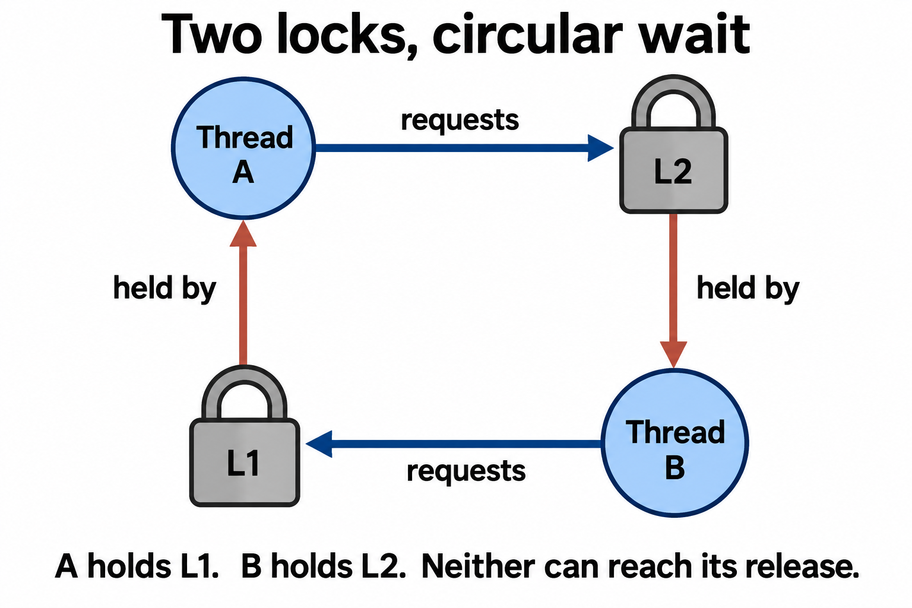
Okları okumayı burada öğren sl. 6: istek oku thread'den kilide, sahiplik oku kilitten sahibine gider. A → L2 → B → L1 → A kapalı bir döngü.
1.3 Kaynak tipi, instance ve yaşam döngüsü sl. 7; Okuma §2#
- Resource type, birbirinin yerine geçebilen (interchangeable) instance'ları gruplar: bir mutex (1 instance), üç özdeş cihaz (3 instance), bir bağlantı havuzu sl. 7. Farklı işe yarayan iki cihazı "ikisi de cihaz" diye aynı tipe koyma Okuma §2. OSC'de tipler R1…Rm, Ri'nin Wi instance'ı vardır OSC ch8 sl. 4.
- Yaşam döngüsü: request → use → release. Gereken instance yoksa request bloklayabilir sl. 7.
- Ders kitabı modeli: kaynaklar yeniden kullanılabilir (reusable) ve iş bitince bırakılır. Bir durumun deadlock olup olmadığına karar verirken dış müdahale hesaba katılmaz sl. 7. Kill ya da kurtarma durumu değiştirebilir ama protokolü deadlock'tan arındırmaz Okuma §1.
- Okumanın açık varsayımları: bilinen allocation, bloklayan request, tutarlı bir anlık görüntü (snapshot), tamamlanınca bırakma Okuma §2.
- Modelin kapsamadıkları: timeout, iptal (cancellation), donanım hatası, tüketilen (consumable) mesajlar, "X ya da Y" türü alternatif istekler, uzak servisteki gizli bağımlılıklar. Bunlar daha zengin bir model ister Okuma §2.
İyi bir teşhis dört şeyi adlandırır: kim bloklu, neyi tutuyor, neyi bekliyor, gereken bırakmayı kim yapabilir Okuma §2.
Tuzak. Yavaş ya da yanıt vermeyen bir program bir gözlemdir, deadlock kanıtı değil. Hâlâ hesap yapıyor, yavaş diski bekliyor, bir admission politikası onu aç bırakıyor ya da dış bir olay bekliyor olabilir Okuma §2.
1.4 Köprü örneği: yol bölümleri kaynak sl. 8; Okuma §2#

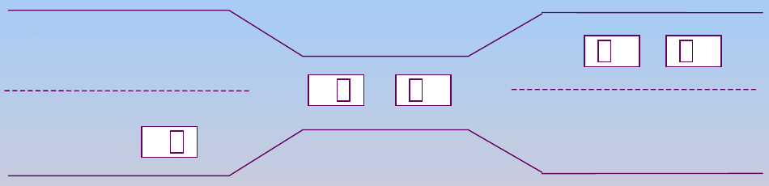
- Her dolu yol bölümü bir kaynak. Karşı yönden gelen arabalar kendi bölümlerini tutarken öndeki bölümü bekler (hold and wait) sl. 8.
- Geri çekilmek bölümleri boşaltır ama ilerlemeyi geri alır (rollback). Birden çok arabanın geri çekilmesi gerekebilir sl. 8.
- Aynı anda tek yöne izin vermek bu çatışmayı önler. Starvation'ı önlemek için yine adil sıra (fair turn-taking) gerekir sl. 8.
- "Her girişe trafik lambası koymak çözer mi?" Ancak lambalar koordineli bir admission kuralı uygularsa. İki bağımsız yeşil ışık karşı trafiği aynı darboğaza sokabilir Okuma §2.
- Model kontrolü Okuma §2: köprünün tamamı tek bir kaynak mı, her bölüm ayrı bir kaynak mı? İkisi de olabilir ama farklı protokolleri anlatır. Tek kaynakta denetleyici girişten önce rezerve eder; bölüm bölüm modelde araba bir bölümü tutup sonrakini ister ve hold-and-wait doğar. Argümanın ortasında model değiştirme.
Kontrol soruları (Bölüm 1)
- K1.1 İki kilit örneğinde "her worker'a ayrı çekirdek vermek" deadlock'u neden çözmez? Cevabında "sahiplik" kelimesini kullan.
- K1.2 Bir web servisi 30 saniyedir yanıt vermiyor. Bunun deadlock olduğunu söylemek için hangi dört bilgiyi toplaman gerekir?
2. Dört gerekli şart; deadlock, starvation, livelock sl. 9–16#
2.1 Coffman'ın dört şartı sl. 9–13; Okuma §3#
| Şart | Hocanın tanımı sl. 9 | Hocanın ek vurgusu |
|---|---|---|
| Mutual exclusion | En az bir ilgili kaynak eşzamanlı paylaşılamaz. | Mutex'in tek sahibi var; salt okunur paylaşılan nesne aynı kısıtı gerektirmez. Şart kaynağın semantiğiyle ilgili, makinede bir ya da çok CPU olmasıyla değil. Kilidi koruma koymadan kaldırmak beklemeyi kaldırır ama veri bozar sl. 10. |
| Hold and wait | Thread ayrılmış bir kaynağı tutarken başka birini bekler. | L1'i tutarken L2'yi ister; L1 bekleme boyunca başkasına kapalı. Hepsini birlikte istemek bu kalıbı kaldırabilir, yeter ki rezervasyonun kendisi koordineli olsun. Katmanlar arası da olur: veritabanı ya da uygulama kilidini tutarken boş bağlantı beklemek sl. 11. |
| No preemption | Kaynak sahibinden öylece alınamaz. | Aşağıda §2.2 sl. 12. |
| Circular wait | Thread'lerin kapalı zinciri: her biri bir sonrakinin tuttuğu kaynağı bekler. | A, B'nin tuttuğunu; B, C'ninkini; C, A'nınkini bekler. Döngü, gereken her bırakmanın neden aynı zincirdeki başka bir ilerlemeye bağlı olduğunu açıklar sl. 13. |
![Hocanın banyo anahtarı benzetmesi: tek instance'lı, dışlayıcı, yeniden kullanılabilir bir kaynak [sl. 10; Okuma §3].](img/hoca/d04-mg-banyo-anahtari.png)
Banyo anahtarı için kuyruk deadlock değildir: sahibi işini bitirip anahtarı bırakabilir. Deadlock için iadeyi engelleyen ek bir bağımlılık gerekir. Örneğin anahtarı tutan kişi, anahtarı bekleyen birinin tuttuğu başka bir kaynağı bekliyor olmalı Okuma §3.
"Gerekli ama yeterli değil." "Bu modelde dört şartın hepsi deadlock için gereklidir. Bir tasarımın onlara izin vermesi her yürütmenin kilitleneceği anlamına gelmez" sl. 13. Ayrım şu:
- Tasarım dört şarta izin veriyorsa açık bir zafiyet taşır. Önleme, izin verilen protokolden en az bir şartı kaldırır Okuma §3.
- Durum: dört şart şu an sağlanıyor mu? OSC: dört şart aynı anda sağlanırsa deadlock ortaya çıkabilir OSC ch8 sl. 6. OSTEP kontrapozitifini söyler: biri bile sağlanmazsa deadlock olamaz OSTEP 32.3.
- Neden yeterli değil? Çok instance'lı kaynaklarda dairesel bekleme olup yine de deadlock olmayabilir (sl. 20 ve sl. 22–23'teki State B, §3.3–3.4). Tek instance'lı kaynaklarda döngü deadlock'a denk düşer ek bilgi; sl. 21'den çıkarım.
OSC'nin no-preemption tanımı daha dardır: kaynak yalnızca onu tutan thread tarafından, işini bitirdikten sonra gönüllü olarak bırakılabilir OSC ch8 sl. 6. Circular wait'i OSTEP ters yönden okur ("her thread zincirdeki bir sonrakinin istediği kaynağı tutar"); aynı döngüdür OSTEP 32.3.
2.2 CPU preemption ≠ kaynak preemption sl. 12; Okuma §3#
- CPU zamanlayıcısı bir thread'i mutex'ini bıraktırmadan kesebilir. İşlemci preemption'ı ile kaynak preemption'ı farklı şeylerdir sl. 12.
- Kilidi zorla almak, koruduğu yarı güncellenmiş veriyi geri getirmez sl. 12.
- Kaynak preemption'ı ancak kaynağın durumu kaydedilebiliyor, geri yüklenebiliyor ya da güvenle geri alınabiliyorsa pratiktir sl. 12.
- Okumanın sorusu: preemptive bir OS'de preemptible olmayan kaynak olur mu? Evet. İşlemci preemption'ı yürütmeyi askıya alır, kilit sahipliğini değiştirmez Okuma §3.
Tuzak. "Linux preemptive bir çekirdek, demek ki no-preemption şartı sağlanmaz" yanlış. Şart kaynak hakkında konuşur ek bilgi; sl. 12'nin uygulaması.
2.3 Trafik örneği sl. 14; Okuma §3#

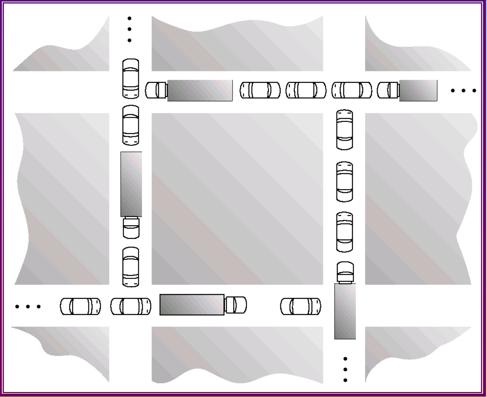
Her araç yol alanı tutar ve öndeki alanı bekler. Çıkışı boş tutmak, yani kavşağa ancak çıkış boşsa girmek, kilitlenmeyi önler sl. 14. Dört şart resimde Okuma §3:
- Mutual exclusion: bir yol bölümünde iki araç olamaz.
- Hold and wait: araç kendi alanını tutarken öndeki alanı bekler.
- No preemption: yalnız ileri gidilen protokolde kimse aracı alanından kaldıramaz.
- Circular wait: bloğu dönen bloklu çıkışlar döngüyü kapatır.
"Daha çok yeşil ışık boş çıkış alanı yaratmaz." Önleme kuralı girişi blokaj oluşmadan önce kısıtlamalı. Döngü oluştuktan sonra koordineli bir geri çekilme gerekir; "herkes tekrar denesin" yetmez Okuma §3.
2.4 Deadlock, starvation, livelock sl. 15–16; Okuma §4#
| Tanım | Durum değişiyor mu? | Başka işler bitiyor mu? | |
|---|---|---|---|
| Deadlock | Bir katılımcı kümesi ilerleyemez, çünkü ihtiyaç duydukları olaylar aynı kümenin bloklu üyelerine bağlı sl. 15. | Küme içinde hayır | Küme dışındakiler bitebilir, küme bitemez |
| Starvation | Bir katılımcı süresiz bekler, bu arada diğer işler devam edebilir; örneğin admission hep yeni gelenleri kayırıyor sl. 15. | Sistem ilerliyor | Evet |
| Livelock | Yarışanlar tekrar tekrar bırakır, yeniden dener, yine çarpışır. Durumları değişir ama yararlı iş hiç tamamlanmaz sl. 16. | Evet | İlgili iş için hayır |
- Circular wait'i kırmak bu sınıf deadlock'u önler; sınırlı bekleme (bounded waiting) ya da adil zamanlama sağlamaz sl. 15. Dairesel bekleme olmadan da starvation olabilir.
- try-lock başarısız olunca hemen ve senkron biçimde yeniden denemek bloklayan deadlock'tan kaçınır ama yine ilerleyemeyebilir: bu livelock'tur sl. 16. OSTEP aynı try-lock kalıbını gösterip "deadlock değil ama ilerleme yok" der OSTEP 32.3.
- Rastgele backoff tekrarlanan çarpışmaları azaltır. Tam bir ilerleme argümanı için yine bir admission kuralı ve açıkça yazılmış zamanlama varsayımları gerekir sl. 16. Tek başarılı deney deterministik bir bekleme sınırı kanıtlamaz Okuma §4.
Okumanın ayırt edici üç sorusu Okuma §4:
- Hangi durum hâlâ değişebiliyor?
- Yararlı işlemler tamamlanıyor mu?
- Bekleyenin ilerlemesine hangi varsayımlar izin verirdi?
Okumanın sınıflandırma alıştırması Okuma §4: kapalı kilit döngüsü → deadlock; sonsuza kadar atlanan istek (başka işler bitiyor) → starvation; senkron release-and-retry (durum değişiyor, iş bitmiyor) → livelock. Çıktısız bir iz bunlardan hangisi olduğunu göstermez. Etiketlemeden önce sahipliği, istekleri ve tamamlanan işi belirle.
Linux'ta nasıl görünür. Uzman deneyi (macOS'ta ölçüldü, kod/backoff.c): deadlock'ta thread'ler çekirdekte uyur ve CPU sıfırdır. Senkron livelock modelinde 10 000 turda sıfır başarı oldu ve CPU yandı (1,95 saniyenin 1,63'ü sistem zamanı). Yine de CPU kullanımı tek başına teşhis değildir.
Kontrol soruları (Bölüm 2)
- K2.1 "Bu sistem preemptive bir çekirdekte çalışıyor, o yüzden no-preemption şartı sağlanmaz, deadlock olamaz." Bu cümledeki hata ne?
- K2.2 Üç gözlem: (a) iki thread de uyuyor, ikisi de diğerinin tuttuğu kilidi bekliyor; (b) bir yazıcı işi saatlerdir sırada, diğer işler basılıyor; (c) iki thread sürekli kilit alıp bırakıyor, CPU %100, iş bitmiyor. Hangisi deadlock, hangisi starvation, hangisi livelock? Her birinde ayırt edici soruyu söyle.
3. Resource-allocation graph okuma sl. 17–26#
3.1 Notasyon sl. 17; Okuma §5#
- Daireler thread, dikdörtgenler resource type, noktalar instance sl. 17.
- T → R: şu anki istek (request edge). R → T: ayrılmış instance (assignment edge); ok, dikdörtgenin içindeki noktadan sahibine çıkar sl. 17; OSC ch8 sl. 7.
- Bir döngüyü yorumlamadan önce ok yönünü oku. Yönü ters çevirirsen bağımlılık argümanı da tersine döner sl. 17.
- Graph bir bağımlılık anlık görüntüsüdür, CPU zaman çizelgesi değil sl. 17.
3.2 Döngü neyi kanıtlar sl. 21; OSC ch8 sl. 11; Okuma §5#
| Durum | Sonuç |
|---|---|
| Şu anki reusable-resource graph'ında döngü yok | Bu modelde kaynak deadlock'u yok. Döngü gerekli. |
| Her tipte tek instance ve döngü var | Deadlock var. Döngü yeterli. |
| Bazı tiplerde birden çok instance ve döngü var | Deadlock olası. Sayılara ve olası tamamlanmalara bak (indirgeme ya da matris). |
| Döngüde kesikli claim edge var | Şu anki bir deadlock değil. Avoidance yorumu: unsafe (§5.3). |
Sezgi ek bilgi: tek instance'ta "R'yi bekliyorum", "R'nin tek sahibini bekliyorum" demektir. Çok instance'ta "R'nin herhangi bir instance'ını bekliyorum" demektir; sahiplerden biri bırakırsa yeter. Döngü dışındaki bir sahip kaçış yolu olabilir.
Graph indirgeme (reduction) yöntemi (her örnekte kullanacağız): isteği şu anki boş instance'larla karşılanabilen bir thread bul → onun bitip bütün instance'larını bıraktığını varsay → tekrar et. Herkes silinirse deadlock yok; silinemeyen kaynak sahipleri deadlocked küme. Bu, §6'daki tespit algoritmasının ta kendisi.
3.3 Üç OSC graph'ı sl. 18–20; Okuma §5#
Sl. 18: ilerleme mümkün. R1 = 1, R2 = 2, R3 = 1, R4 = 3 instance.

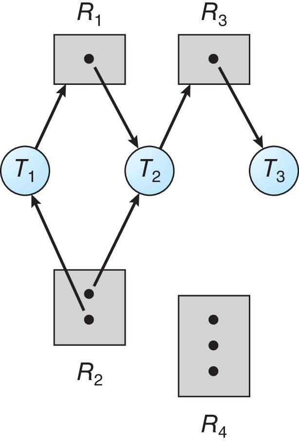
| Thread | Tutar | İster |
|---|---|---|
| T1 | R2'den 1 | R1 |
| T2 | R1, R2'nin diğeri | R3 |
| T3 | R3 | — |
- Kenarlar: T1→R1, R1→T2, T2→R3, R3→T3, R2→T1, R2→T2. R4'e kenar yok.
- Döngü yok: zincir T1→R1→T2→R3→T3'te biter, çünkü T3'ün giden kenarı yok.
- İndirgeme: T3 biter, R3'ü bırakır → T2 R3'ü alır, biter, R1 ile bir R2'yi bırakır → T1 R1'i alır, biter. Sıra T3, T2, T1 sl. 18.
- R4'ün üç boş instance'ı eksik bir R1 ya da R3'ün yerini tutmaz sl. 18. Tipler birbirinin yerine geçmez.
Sl. 19: tek istek deadlock yaratır. Tek değişiklik: T3 → R2.

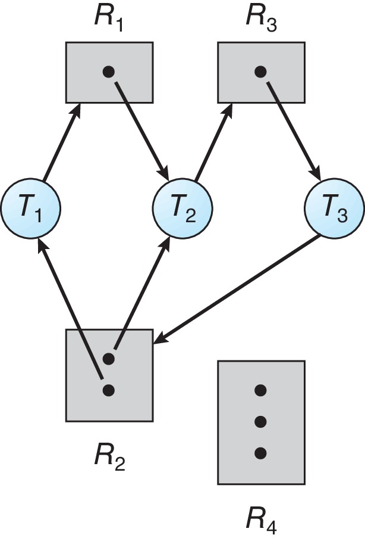
- R2'nin iki instance'ı da T1 ve T2'de. T1, T2'nin tuttuğu R1'i bekler; T2, T3'ün tuttuğu R3'ü bekler; T3, bu bloklu kümeden bir R2 bırakılmasını bekler sl. 19.
- İki döngü var ek bilgi; graph'tan okunur, OSC kitap metni de ikisini listeler: T1→R1→T2→R3→T3→R2→T1 ve T2→R3→T3→R2→T2.
- R2 çok instance'lı olduğu için karar döngüden değil sayılardan gelir: R2'nin iki sahibi de bloklu kümede, kümenin dışında R1, R2, R3 bırakabilecek kimse yok. {T1, T2, T3} deadlocked.
- R4 hâlâ boş: "herhangi bir boş kaynak var mı?" yanlış soru. Kapalı bağımlılık kümesini bul sl. 19.
Sl. 20: döngü var, deadlock yok. R1 = 2, R2 = 2 instance.

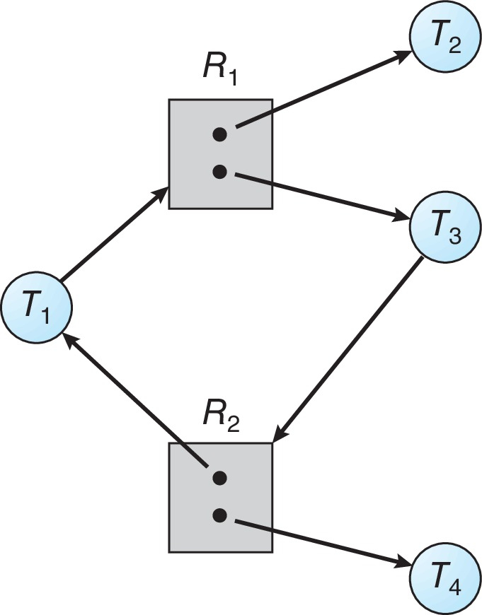
| Thread | Tutar | İster |
|---|---|---|
| T1 | R2'den 1 | R1 |
| T2 | R1'den 1 | — |
| T3 | R1'den 1 | R2 |
| T4 | R2'den 1 | — |
- Döngü: T1 → R1 → T3 → R2 → T1 sl. 20.
- Ama T2 ya da T4 döngüyü beklemeden bitebilir. T2 biterse bir R1 boşalır → T1 R1'i alır, biter, R2'yi bırakır → T3 R2'yi alır, biter. Deadlock yok.
- Çok instance'ta döngü tek başına yeterli bir deadlock testi değildir sl. 20.
3.4 Graph alıştırması: önce karar ver, sonra müdahale et sl. 22–23; Okuma §5#
State A: X = 1, Y = 1. A, X'i tutar ve Y ister; B, Y'yi tutar ve X ister.
- Döngü: A → Y → B → X → A. Her tip tek instance → deadlock. İkisi de, belirtilen protokolle, bırakmaya ulaşamaz sl. 23.
State B: X = 2, Y = 1. A bir X tutar ve Y ister; B, Y'yi tutar ve X ister; C diğer X'i tutar ve bir şey istemez.
- Döngü yine var: A → Y → B → X → A.
- Ama C biter ve X'i bırakır → B X'i alır, biter, Y'yi bırakır → A biter. Deadlock yok. Sıra C, B, A sl. 23.
- "Döngü iki durumda da var. İkinci X instance'ı sonucu değiştiriyor" sl. 23.
İnce nokta Okuma §5: bu sonuç C'nin bir tamamlanma yolu olmasına bağlı. Kâğıtta instance sayısını artırmak, o instance'ın sahibi de bloklu ise yetmez.
3.5 Resource graph'tan wait-for graph'a sl. 24; Okuma §6; OSC ch8 sl. 33–34#
Yalnız tek instance'lı kaynaklar için: Ti → R → Tj kenarını Ti → Tj ile değiştir. Anlamı: Ti, gereken kaynağı bırakması için Tj'yi bekliyor sl. 24.

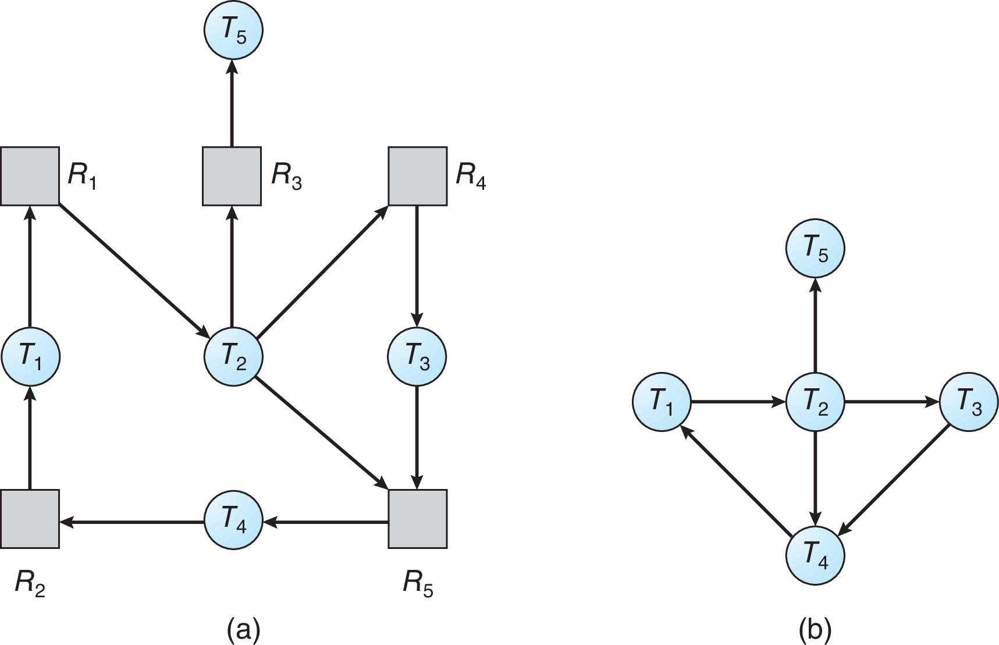
Şekildeki resource graph (hepsi tek instance):
| Kaynak | Sahibi | Bekleyen(ler) | Wait-for kenarı |
|---|---|---|---|
| R1 | T2 | T1 | T1 → T2 |
| R2 | T1 | T4 | T4 → T1 |
| R3 | T5 | T2 | T2 → T5 |
| R4 | T3 | T2 | T2 → T3 |
| R5 | T4 | T2, T3 | T2 → T4, T3 → T4 |
- Döngüler: T1 → T2 → T4 → T1 (slaytın dediği) ve T1 → T2 → T3 → T4 → T1. Döngüler örtüşebilir Okuma §6.
- "T5 bitse bile T1 → T2 → T4 → T1 döngüsü kalır" sl. 24. T5 R3'ü bırakır, R3 T2'ye gider, ama T2 hâlâ R4'ü (T3'te) ve R5'i (T4'te) bekliyor. {T1, T2, T3, T4} deadlocked.
- Okumanın dersi: çalışabilecek bir thread bulmak yetmez; bıraktığı kaynakların ilgili beklemeleri çözmesi gerekir Okuma §6.
- Maliyet: OSC "n² mertebesinde işlem" der OSC ch8 sl. 33. Hoca "adjacency list ile O(V + E)" der sl. 62. Çelişki değil, gösterim farkı: yoğun matriste karesel iş çıkar. Karmaşıklık söylerken gösterimi de söyle Okuma §6.
- Tuzak: wait-for graph'ı çok instance'lı kaynağa uygulama. Orada "Ti kimi bekliyor?" sorusunun tek cevabı yok sl. 24.
3.6 Dining philosophers yeniden sl. 25–26; Okuma §6#

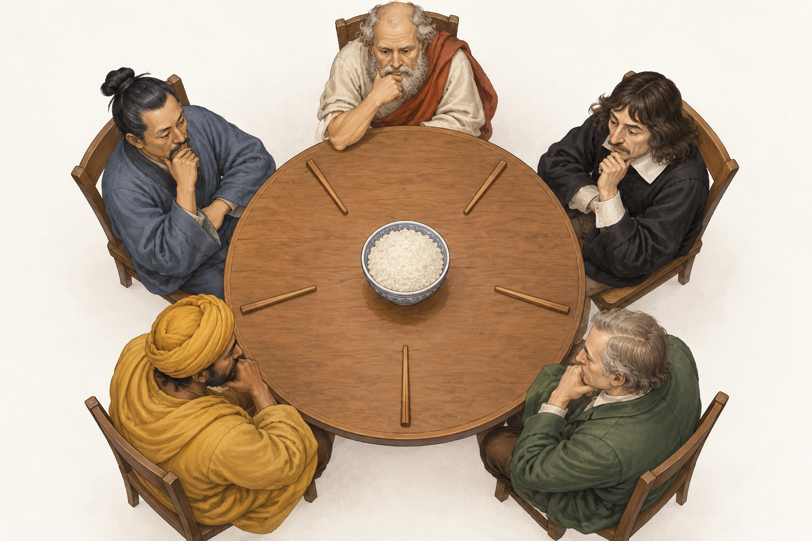
- dersin filozoflar benzetmesi, sahiplik ve istek graph'ı olarak sl. 25.
![Ders kitabının paylaşılan çubuk modeli: her filozofun iki komşu çubuğa ihtiyacı var. OSC 10e, Ch.7 slayt 12 [sl. 26].](img/hoca/d04-osc-ch7-s12-filozoflar.jpeg)
- Her çatal tek instance. Beş filozofun hepsi birer çatal tutup diğerini bekliyorsa dört şart da sağlanır ve kimse yiyemez sl. 25–26.
- Wait-for graph (ek bilgi; filozof i'nin çatalları i ve (i+1) mod 5 kabulüyle): P0 → P1 → P2 → P3 → P4 → P0, beş düğümlü tek döngü.
- Çözüm sl. 25: çatalları 0–4 numarala. Önce küçük numaralıyı, sonra büyüğü al; yedikten sonra ikisini bırak. Dairesel edinme kalkar.
- Neden işe yarar ek bilgi: 4 ile 0 arasındaki filozof (P4) önce 0'ı almak zorunda. P4 ve P0 ikisi de önce C0'ı ister; alamayan hiçbir şey tutmadan bekler. İki durum var:
- P0 C0'ı alırsa P4 elinde hiçbir şey olmadan bekler. C4'ü isteyen tek kişi P3 kalır; P3 yer, bırakır, zincir geriye doğru çözülür.
- P4 C0'ı alırsa sonra C4'ü ister ve P3 ile C4 için yarışır. Hangisi kazanırsa iki çatalını da tutmuş olur ve yer. Kaybeden yalnız bekler; döngü yine kapanamaz. Her iki durumda da en yüksek numaralı çatalı tutan biri ikinci çatalını alabilir, çünkü ondan büyük numaralı çatal isteyen yok.
- Bu bir önleme kuralıdır, adalet garantisi değil: her filozofun sınırlı sürede yiyeceğini söylemez Okuma §6.
Kontrol soruları (Bölüm 3)
- K3.1 Sl. 19'da üç boş R4 instance'ı varken neden deadlock var? Cevabı "tip" ve "kapalı küme" kavramlarıyla ver.
- K3.2 State B'de C de bir şey bekliyor olsaydı (örneğin Y'yi), sonuç ne olurdu? Neden?
4. Dört yaklaşım ve önleme sl. 27–37#
4.1 Dört yaklaşım sl. 27; Okuma §7#
| Yaklaşım | Karar | Ana maliyet |
|---|---|---|
| Prevention (önleme) | Gerekli bir şartı yasakla | Erişim kısıtları |
| Avoidance (kaçınma) | Yalnız durum safe kalırsa ver | Maksimum talep bilgisi |
| Detection + recovery | İzin ver, tespit et, sonra onar | İzleme ve kaybedilen iş |
| Riski kabul et | Genel bir mekanizma yok | Hataları uygulama yönetir |
Kaynak: sl. 27. OSC aynı üçlüyü verir ve çoğu OS'nin (Linux, Windows dahil) sorunu yok saydığını söyler OSC ch8 sl. 12. OSTEP'in pragmatik notu: deadlock nadirse ve bedeli düşükse yok saymak makul olabilir OSTEP 32.3.
Dikkat (denetim D-03). "Önlemede çalışma anında karar yok" genellemesi yanlış. Kural tasarımda konur. Kilit sırasında çalışma anında ek bir karar yoktur. Ama bütün kümeyi baştan rezerve etmek ve bırakıp yeniden denemek, kuralı çalışma anında bir koordinatörle uygular sl. 29–30; Okuma §7. Önlemeyi kaçınmadan ayıran şey karar anı değil, kullandığı bilgidir: önleme maksimum talep bilgisi istemez, yalnızca protokolü kısıtlar sl. 38; Okuma §17.
4.2 Paylaşım ya da rezervasyonla önleme sl. 28–29; Okuma §7#
Mutual exclusion'ı kırmak. Yalnızca paylaşımın gerçekten geçerli olduğu yerde: değişmez (immutable) veri ya da kaynak modelini değiştiren bir spooler sl. 28. Spooler'da üreticiler yazıcıyı doğrudan tutmaz; işi kuyruğa yazar, yazıcıyı yalnız spooler tutar Okuma §7. Mutex gibi doğası gereği paylaşılamaz kaynaklarda bu yol yoktur OSC ch8 sl. 13. OSTEP'in kilitsiz (lock-free, compare-and-swap) veri yapıları da bu aileden: kilit yok, deadlock yok, ama livelock hâlâ mümkün OSTEP 32.3.
Hold and wait'i kırmak. İki protokol sl. 28:
- Başlamadan önce bütün kümeyi rezerve et.
- Yeni bir küme istemeden önce elindekilerin hepsini bırak.
Bedeli sl. 28–29; Okuma §7:
- Kaynaklar kullanılmadan çok önce ayrılır ve boşta kalır (düşük kullanım).
- Büyük bir istek aç kalabilir: küçük istekler kapasiteyi sürekli tüketir.
- Sonradan gerekecek kaynaklar baştan bilinmeyebilir; bütün iş için maksimum kümeyi ayırmak ciddi eşzamanlılık kaybettirir sl. 29.
- "Bir şartı kaldırmanın bedeli vardır" sl. 28.
Rezervasyonun kendisi atomik olmalı sl. 29. "X boş mu kontrol et; sonra Y'yi al; sonra X'i al" atomik bir bütün-küme rezervasyonu değildir. Okumanın tarayıcı ve yazıcı senaryosu Okuma §7:
| Adım | İş J1 | İş J2 | Durum |
|---|---|---|---|
| 1 | Listeye bakar: tarayıcı ve yazıcı boş | Hiçbir şey ayrılmadı | |
| 2 | Listeye bakar: ikisi de boş | Hiçbir şey ayrılmadı | |
| 3 | Tarayıcıyı alır | J1: tarayıcı | |
| 4 | Yazıcıyı alır | J2: yazıcı | |
| 5 | Yazıcıyı ister, bekler | J1 tutuyor ve bekliyor | |
| 6 | Tarayıcıyı ister, bekler | Döngü: deadlock |
Kontrol hiçbir şeyi ayırmadı. Bu bir TOCTOU (time-of-check to time-of-use) yarışıdır (terim ek bilgi). Düzeltme: tek bir koordinatör kararı verir ve iki tahsisi tek bir koordineli işlem olarak kaydeder; küme eksikse iş hiçbir parçayı tutmadan bekler Okuma §7; sl. 29. Koordinatörü çağırırken tutulan başka kilitler de bağımlılık analizine girmelidir Okuma §7.
/* ek bilgi: okumadaki ilkenin C taslağı */
pthread_mutex_lock(&alloc_mtx); /* karar seri hâle gelir */
while (!(scanner_free && printer_free))
pthread_cond_wait(&alloc_cv, &alloc_mtx); /* hiçbir parça tutulmadan beklenir */
scanner_free = printer_free = 0; /* iki tahsis tek adımda kaydedilir */
pthread_mutex_unlock(&alloc_mtx);
4.3 Bırak ve geri al: no preemption'ı kırmak sl. 30; Okuma §7#
- Yeni istek karşılanamıyorsa önceki kaynakları bırak; gereken küme alınabildiğinde yeniden dene sl. 30. OSC aynı protokolü verir: iş eskileri ve yenileri birlikte alabildiğinde yeniden başlar OSC ch8 sl. 14.
- Yalnızca kısmi iş geri alınabiliyorsa ya da henüz dışarıdan görünür olmamışsa çalışır. Gönderilmiş bir mesaj ya da fiziksel bir eylem geri alınamaz sl. 30.
- Tekrarlanan geri alma starvation yaratır. Yeniden deneme maliyetini ve kimin sürekli kaybettiğini izle sl. 30.
4.4 Global kilit sırası: circular wait'i kırmak sl. 31–33; Okuma §8#
Kural sl. 31: her ilgili kilide benzersiz bir rank ver. Başka kilitler tutarken yalnız artan rank ile edin. OSC bunu en yaygın önleme yöntemi sayar OSC ch8 sl. 14–15; OSTEP en pratik teknik der OSTEP 32.3.
İspat (hocanın hazırlık paketindeki dört parçadan biri) sl. 31; Okuma §8:
- Varsay: bir dairesel bekleme var. T₀, …, T_{k−1} thread'leri ve L₀, …, L_{k−1} kilitleri öyle ki her i için (indisler mod k) Tᵢ, Lᵢ'yi tutuyor ve L_{i+1}'i bekliyor.
- Tᵢ, Lᵢ'yi tutarken L_{i+1}'i istedi. Kurala göre bu ancak rank(Lᵢ) < rank(L_{i+1}) ise mümkün.
- Bu her i için geçerli: rank(L₀) < rank(L₁) < … < rank(L_{k−1}) < rank(L₀).
- "<" geçişli olduğundan rank(L₀) < rank(L₀) çıkar. Bu imkânsız. Dolayısıyla döngü yok; circular wait gerekli bir şart olduğundan bu kilitler üzerinden deadlock da yok. ∎
Hocanın kısa yazımı: "Bir döngü rank(L1) < rank(L2) < … < rank(Lk) < rank(L1) gerektirir, ki bu imkânsızdır" sl. 31.
İspatın varsayımları ve sınırları:
- Her yol aynı sırayı izlemeli, callback'ler ve hata yolları dahil sl. 31. Tek bir yerel "istisna" global ispatı geçersiz kılar sl. 34.
- İspat edinme sırasına dayanır, bırakma sırasına değil Okuma §8.
- Adaleti kanıtlamaz sl. 31. Starvation hâlâ mümkün.
- Yalnızca modellenen kilitleri kapsar. Okumanın "kusuru bul" örneği: iki worker da L1 → L2 sırasına uyuyor, ama L1'i aldıktan sonra iki thread'lik bir buluşma noktasında (rendezvous) bekliyor. L1'i yalnız biri alabilir; o diğerini buluşmada bekler, diğeri L1'i bekler: deadlock Okuma §8. Uzman bu varyantı macOS'ta çalıştırdı (
kod/variants.c,ordered-rvmodu); tek mesaj basıp askıda kaldı. - Tam sıra şart değil, kısmi sıra (partial order) da yeter. Linux bellek eşleme kodu bir düzine kadar kilidin edinme sırasını yorum satırlarında belgeler OSTEP 32.3.
Sl. 32: ortak edinme planı.

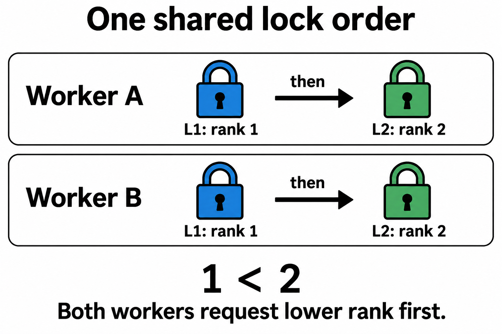
Tablodaki iki satır edinme planıdır; L1'in aynı anda iki sahibi olduğunu göstermez sl. 32. Gerçek çalışmada biri L1'i alır, diğeri hiçbir şey tutmadan L1'de bekler. Bu yüzden döngü kurulamaz.
Sl. 33: ders kitabının çatışan sırası.

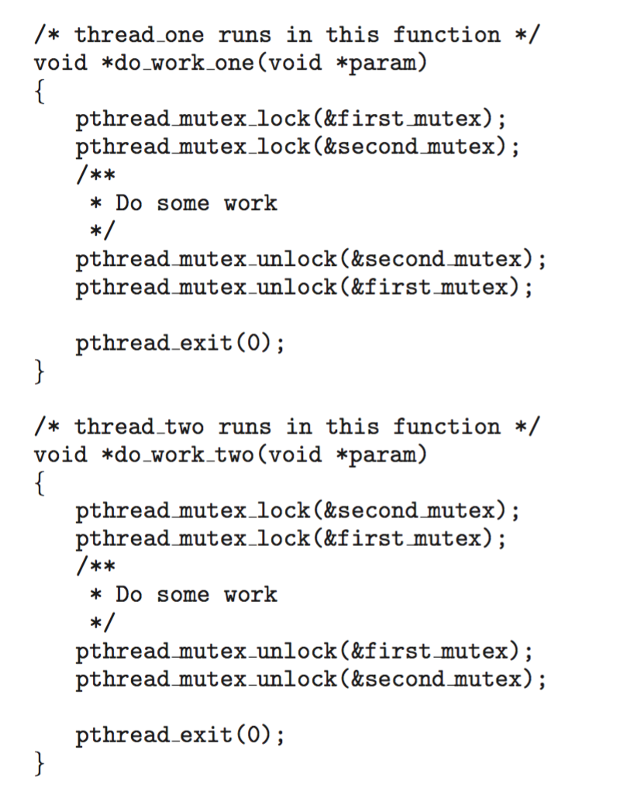
thread_one önce first_mutex, sonra second_mutex alır; thread_two tersini yapar. İkisi de ilk kilidini tuttuğunda her biri diğerinde bloklanır sl. 33. OSC'nin rank'ları first_mutex = 1, second_mutex = 5 OSC ch8 sl. 15. Düzeltme: ikinci worker'ın edinme sırasını ortak sıraya çek. Slayttaki parça hata kontrolünü atlıyor; çalıştırmak için kontrollü pratik programını kullan sl. 33.
4.5 Dinamik seçilen kaynaklar sl. 34; Okuma §8#
Sorun: kilit çalışma anında argümana göre seçilir, sabit bir "önce L1" kuralı yazılamaz. transfer(from, to) ile transfer(to, from) aynı anda çalışırsa ikisi de "önce from" kuralına uyar ama ters sırada kilitler (OSC kitap metnindeki transaction() örneği, ek bilgi; slaytlarda yok).
Hocanın kuralı sl. 34:
- Transfer yönünden bağımsız olarak küçük ve kararlı (stable) hesap kimliğinin kilidini önce al.
- Kaynak ve hedef aynı hesapsa bunu açıkça ele al; özyinelemesiz (nonrecursive) bir kilidi iki kez alma.
- Sıralama kuralını ortak yardımcı fonksiyonlarda tut. Tutarsız yerel istisnalar global ispatı geçersiz kılar.
/* ek bilgi: hocanın kuralının C taslağı */
int transfer(Account *from, Account *to, long amt) {
if (from->id == to->id) return handle_self_transfer(from, amt);
Account *lo = (from->id < to->id) ? from : to;
Account *hi = (from->id < to->id) ? to : from;
pthread_mutex_lock(&lo->lock);
pthread_mutex_lock(&hi->lock);
from->balance -= amt; to->balance += amt;
pthread_mutex_unlock(&hi->lock);
pthread_mutex_unlock(&lo->lock);
return 0;
}
OSTEP kilitleri adresle sıralar (if (m1 > m2)) ve m1 != m2 varsayar OSTEP 32.3. Kararlı kimlik daha güçlüdür: adres yalnız nesne yaşadıkça sabittir ek bilgi.
4.6 Try-lock ve backoff sl. 35; Okuma §8#
pthread_mutex_trylocksıradaki kilit müsait değilse bloklanmadan döner; POSIX bu durum içinEBUSYtanımlar sl. 35; Okuma §8.- Başarısızlıkta ilk kilidi bırak, sonra yeniden dene. Bu, o denemedeki kalıcı hold-and-wait döngüsünü kaldırır, yeter ki bırakma gerçekten yapılsın sl. 35.
- İlerleme için sınırlı deneme, asimetri ya da bir admission politikası gerekebilir. Sonsuza kadar yeniden denemek adalet garantisi değildir sl. 35.
OSTEP'in kalıbı OSTEP 32.3:
top:
pthread_mutex_lock(L1);
if (pthread_mutex_trylock(L2) != 0) {
pthread_mutex_unlock(L1);
goto top;
}
Diğer thread ters sırayla aynı kalıbı izlese bile deadlock olmaz. Ama ikisi aynı fazda dönerse: A L1'i alır, B L2'yi alır, ikisi de EBUSY alır, ikisi de bırakır, tekrar… Bu livelock'tur sl. 16.
Sınıflandırma farkı. OSTEP trylock'u "No Preemption" başlığı altında anlatır ama kendisi bunun gerçek preemption olmadığını, thread'in sahipliğinden kendi isteğiyle vazgeçtiğini söyler OSTEP 32.3. Hoca etkisini hold and wait üzerinden anlatır sl. 35. Sınavda hocanın çerçevesini kullan.
Linux'ta nasıl görünür. Uzman deneyi (macOS'ta ölçüldü, kod/backoff.c): ters sırayla trylock kullanan iki thread hiçbir koşuda kilitlenmedi. Zorla senkronlanmış modelde 10 000 turda 0 başarı oldu (saf livelock). Çarpışmadan sonra 1/2 olasılıkla bir tur pas geçen rastgele modelde başarı sayısı çarpışma sayısının yaklaşık yarısıydı (2867'ye 5723), ama deterministik bir üst sınır yok.
4.7 Timeout kanıttır, teşhis değil sl. 36; Okuma §16#
- Bir timeout yalnızca işlemin seçilen bir son tarihe kadar bitmediğini kanıtlar. Yavaş hesaplama, starvation ve dış I/O da timeout'a düşer sl. 36.
- Deadlock'u teşhis etmek için sahipleri, istekleri ve bırakma için gereken olayları yeniden kur sl. 36.
- Bir watchdog gösterim sürecini durdurabilir; bu paylaşılan uygulama durumunu onarmanın genel yöntemi değildir sl. 36.
- Ters yön de geçerli: bir çalıştırmanın başarıyla bitmesi protokolün deadlock'suz olduğunu kanıtlamaz Okuma §16.
4.8 Birinci yarı kontrol noktası sl. 37#
Hocanın üç sorusu sl. 37:
- İki kilit durumunu her edinmeden sonra çiz; sahipliği ve istekleri işaretle. Adım 1: L1 → A. Adım 2: L1 → A, L2 → B. Adım 3: A → L2 eklenir; zincir A → L2 → B, döngü yok, B hâlâ ilerleyebilir. Adım 4: B → L1 eklenir; B → L1 → A → L2 → B kapalı döngü, tek instance → deadlock.
- Döngü neden tek instance'ta deadlock'u kanıtlar ama iki instance'ta zararsız olabilir? Tek instance'ta beklenen kaynağın tek sahibi döngüde ve bloklu; bırakma yolu yok. İki instance'ta ikinci instance döngü dışındaki, bitebilecek bir thread'de olabilir; onun bırakması döngüyü çözer (sl. 20'de T2/T4, sl. 23'te C).
- Bir global kilit sırası ver ve tam olarak hangi şartı kaldırdığını söyle. rank(L1) = 1 < rank(L2) = 2; başka kilit tutarken yalnız artan rank ile edin. Kaldırdığı şart: circular wait. Mutual exclusion, hold and wait (A L1'i tutup L2'yi bekleyebilir) ve no preemption hâlâ geçerli olabilir; yalnız döngü kapanamaz.
Kontrol soruları (Bölüm 4)
- K4.1 Bir worker kurala uyuyor: önce L1, sonra L2. Ama L1'i tuttuktan sonra bir koşul değişkeninde (condition variable) başka bir worker'ın sinyalini bekliyor; o worker'ın sinyal vermesi için L1'i alması gerekiyor. Kilit sırası ispatı burada neden işe yaramaz?
- K4.2 "Bütün kaynakları baştan rezerve et" kuralı hangi şartı kırar? Bedeli olan iki şeyi say.
5. Kaçınma: safe state ve Banker's algorithm sl. 38–56#
5.1 Kaçınma neden ayrı bir fikir sl. 38; Okuma §9#
- Önleme izin verilen protokolü değiştirir. Kaçınma her önerilen tahsisi beyan edilmiş maksimum talebe karşı denetler sl. 38.
- Available yetmez: müsait kaynakları vermek garanti edilmiş bir tamamlanma sırası bırakmayabilir sl. 38.
- Varsayımlar sl. 38: maksimum talepler doğru, bir tip içindeki instance'lar birbirinin yerine geçebilir, tamamlanan iş kaynaklarını sonlu sürede bırakır. OSC buna şunu ekler: istekte bulunan thread beklemek zorunda kalabilir OSC ch8 sl. 25.
5.2 Safe, unsafe, deadlocked sl. 39; OSC ch8 sl. 17–19; Okuma §9#
- Safe: her thread'in kalan maksimum talebini karşılayıp hepsinin bitmesine izin veren en az bir sıra var sl. 39. OSC tanımı: ⟨T₁, …, Tₙ⟩ sırasında her Tᵢ'nin hâlâ isteyebileceği kaynaklar, şu anki Available ile j < i olan bütün Tⱼ'lerin tuttuklarının toplamıyla karşılanabilir OSC ch8 sl. 17.
- Unsafe: bu garanti yok. Gerçek gelecek daha az kaynak kullanıp yine bitebilir sl. 39.
- İlişki: her deadlocked durum unsafe'tir; unsafe bir durum henüz deadlocked olmak zorunda değildir sl. 39.

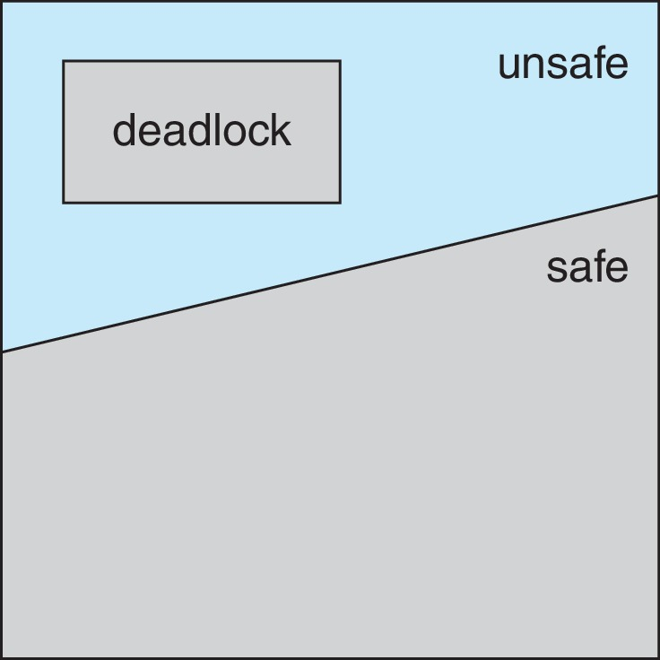
- Safe sıra bir tanıktır (witness): tamamlanmanın mümkün olduğunu gösterir. CPU zamanlayıcısına talimat ya da vaat edilmiş bir bitiş sırası değildir sl. 40.
- Okumanın tahmin sorusu: safe sıra yoksa herkes zaten bloklu mu olmalı? Hayır. Safety olası gelecek maksimum talebe bakar; tespit şu anki istekleri kullanır Okuma §9.
5.3 Tek tipli 10 birim örneği sl. 40–43; Okuma §9#
Tek tip, toplam 10 birim. A 4 tutuyor, en fazla 6 isteyebilir; B 3 tutuyor, en fazla 8 isteyebilir sl. 40.
| İş | Allocation | Max | Need = Max − Allocation |
|---|---|---|---|
| A | 4 | 6 | 2 |
| B | 3 | 8 | 5 |
Available = 10 − (4 + 3) = 3.
| Adım | Aday | Need ≤ Work? | Work sonra |
|---|---|---|---|
| Başlangıç | — | — | 3 |
| 1 | A | 2 ≤ 3 ✓ | 3 + 4 = 7 |
| 2 | B | 5 ≤ 7 ✓ | 7 + 3 = 10 |
⟨A, B⟩ bir safety tanığıdır sl. 40. B ilk sıraya giremez (5 > 3), bu durumda tek tanık budur ek bilgi.

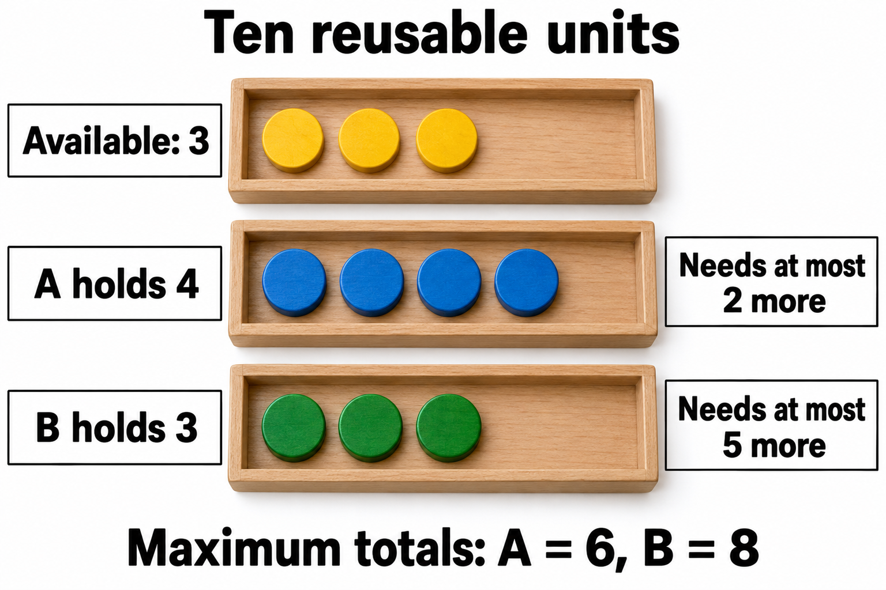
Sl. 41'in cümlesi: "A 2 ödünç alır, biter ve 6 iade eder. Havuzda 7 olur" sl. 41. Dikkat: 6, A'nın maksimumu, çünkü A önce 2 ödünç almıştı: 3 − 2 + 6 = 7 = 3 + 4. Work güncellemesi yine Work + Allocation'dır (§5.5).
Available her zaman safe demek değil sl. 42–43. Aynı başlangıçtan B'ye geçici olarak 2 birim daha ver:
| İş | Allocation | Max | Need |
|---|---|---|---|
| A | 4 | 6 | 2 |
| B | 5 | 8 | 3 |
Available = 1. A 2 ister (2 > 1 ✗), B 3 isteyebilir (3 > 1 ✗). Kimse ilk sırada bitmeyi garanti edemez → unsafe sl. 42.

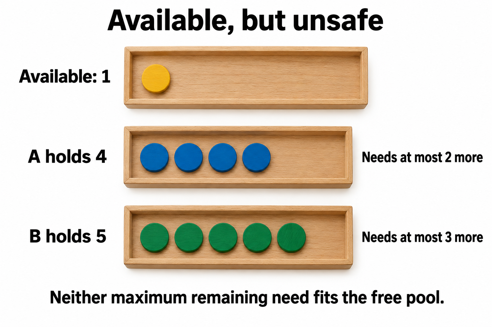
- Bu durum henüz deadlocked değil: kimse şu an bloklu değil, B maksimumunu hiç istemeden bitebilir sl. 42.
- Banker yine de reddeder sl. 42. Kuralı, izin verilen maksimum taleplere karşı garantiyi korumaktır; taleplerin küçük çıkacağını tahmin etmek değil Okuma §9.
- Unsafe'in deadlock'a dönüşebileceği bir gelecek ek bilgi: A 2 ister (1 var, bekler), B 3 ister (bekler). İkisi de tutup bekliyor → deadlock.
Okumanın jeton alıştırması Okuma §9: B'ye 2 değil 1 birim verilirse? Available 2, A Need 2, B Need 4. A biter (2 ≤ 2) → Work 6; B biter (4 ≤ 6) → 10. Safe, ⟨A, B⟩ tanık kalır. Karar B'nin zaten çok tutmasına değil, ortaya çıkan sayılara bağlıdır.
5.4 Claim edge'li graph: tek instance'ta kaçınma sl. 44–45; Okuma §10; OSC ch8 sl. 20–24#
- Tek instance'lı kaynaklarda kaçınma graph ile, çok instance'lıda Banker ile yapılır OSC ch8 sl. 20.
- Claim edge Tᵢ ⇢ Rⱼ (kesikli): Tᵢ, Rⱼ'yi ileride isteyebilir. İstek yapılınca request edge'e, verilince assignment edge'e dönüşür; bırakılınca yeniden claim edge olur. Claim'ler önceden (a priori) beyan edilmelidir OSC ch8 sl. 21; Okuma §10. (OSC slaytı burada "process Tj may request" yazar; indis hatası, doğrusu Tᵢ. Okuma düzeltilmiş hâlini kullanır.)
- Kural: istek, request edge'i assignment edge'e çevirmek (claim edge'ler dahil) bir döngü oluşturmuyorsa verilir OSC ch8 sl. 24.

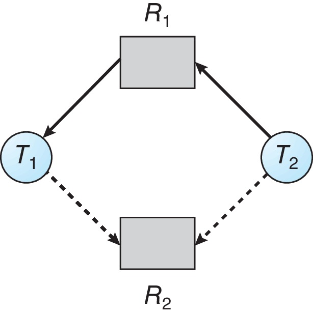
Sl. 44 durumu: R1 → T1 (atanmış); T2 → R1 (şu anki istek); T1 ⇢ R2 ve T2 ⇢ R2 (gelecek claim'ler). Kesikli kenar, thread'in şu an bloklu olduğunun kanıtı değildir sl. 44.

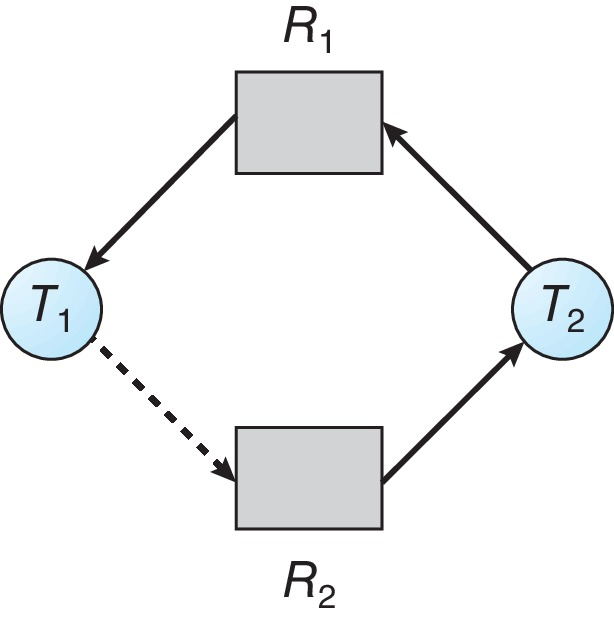
Sl. 45: R2'yi geçici olarak T2'ye ata (R2 → T2). Döngü: T1 ⇢ R2 → T2 → R1 → T1. T1 ileride R2'yi isterse T1 T2'nin R2'sini, T2 T1'in R1'ini bekler → deadlock. Kaçınma kuralı bu atamayı reddeder sl. 45. Ama T1'i şu an bloklu saymak yanlış. Claim içeren olası bir döngüyü, şu anki isteklerin deadlock'undan ayır sl. 45; sl. 21.
5.5 Banker's algorithm: anlık görüntü ve Need sl. 46–48; Okuma §11; OSC ch8 sl. 26–30#
Veri yapıları (n thread, m kaynak tipi) OSC ch8 sl. 26:
- Available[m]: her tipten boş instance sayısı.
- Max[n][m]: Tᵢ'nin Rⱼ'den isteyebileceği en fazla instance.
- Allocation[n][m]: Tᵢ'nin şu an tuttuğu.
- Need[n][m] = Max − Allocation: Tᵢ'nin bitirmek için daha isteyebileceği.
Need maksimum ek taleptir; ne toplam claim ne de şu an bekleyen istektir sl. 47. Değişmez (invariant): her tip için toplam = Available + Σ Allocation sl. 72; Okuma §11.
Anlık görüntü sl. 46: üç tip A, B, C. Toplam = (10, 5, 7); Available = (3, 3, 2). Bütün vektörler bu bileşen sırasını kullanır.
| Thread | Allocation (A B C) | Max (A B C) | Need = Max − Allocation |
|---|---|---|---|
| T0 | 0 1 0 | 7 5 3 | 7 4 3 |
| T1 | 2 0 0 | 3 2 2 | 1 2 2 |
| T2 | 3 0 2 | 9 0 2 | 6 0 0 |
| T3 | 2 1 1 | 2 2 2 | 0 1 1 |
| T4 | 0 0 2 | 4 3 3 | 4 3 1 |
Need değerleri sl. 47 ile birebir aynı. Değişmez kontrolü: Σ Allocation = (0+2+3+2+0, 1+0+0+1+0, 0+0+2+1+2) = (7, 2, 5); Available ile toplamı (10, 5, 7) ✓.
Safety testi sl. 48; OSC ch8 sl. 27:
Work = Available
Finish[i] = false (her i)
tekrarla:
Finish[i] = false ve Need[i] <= Work (her bileşende) olan bir i bul
yoksa dur
Work = Work + Allocation[i] # tamamlanmayı modelle
Finish[i] = true
safe <=> her Finish[i] = true
- Karşılaştırma bileşen bileşen: A fazlası C eksiğini ödemez sl. 56.
- Tam bir sıra safety'yi kanıtlar; takılmak unsafe demektir sl. 48.
- Work karalama verisidir: simülasyon ne thread çalıştırır ne canlı tahsisi değiştirir sl. 48.
- Maliyet: en kötü durumda n tur × n aday × m bileşen = O(m·n²). Hocanın slaytı bu sınırı tespit algoritması için verir sl. 62; safety testi aynı döngü yapısına sahip ek bilgi; OSC kitap metni.
5.6 Tam safety izi sl. 49–50; Okuma §12#
Başlangıç Work = (3, 3, 2). Her adımda bütün bitmemiş adaylar (✓ uyar, ✗ uymaz; uymayan bileşen parantezde):
| Work | T0 (7,4,3) | T1 (1,2,2) | T2 (6,0,0) | T3 (0,1,1) | T4 (4,3,1) | Seçilen |
|---|---|---|---|---|---|---|
| (3,3,2) | ✗ (A,B,C) | ✓ | ✗ (A) | ✓ | ✗ (A) | T1 |
| (5,3,2) | ✗ (A,B,C) | — | ✗ (A: 6>5) | ✓ | ✓ | T3 |
| (7,4,3) | ✓ (tam eşit) | — | ✓ | — | ✓ | T4 |
| (7,4,5) | ✓ | — | ✓ | — | — | T2 |
| (10,4,7) | ✓ | — | — | — | — | T0 |
| (10,5,7) | bitti |
Hocanın tablosu sl. 49:
| Adım | Thread ve kalan Need | Work (bitişten sonra) |
|---|---|---|
| Başlangıç | — | 3 3 2 |
| 1 | T1: 1 2 2 | 5 3 2 |
| 2 | T3: 0 1 1 | 7 4 3 |
| 3 | T4: 4 3 1 | 7 4 5 |
| 4 | T2: 6 0 0 | 10 4 7 |
| 5 | T0: 7 4 3 | 10 5 7 |
Sonuç safe. Son Work toplam vektöre eşit olmalı: (10, 5, 7) ✓ sl. 50.
Başka tanıklar da geçerli sl. 56; Okuma §12. Bu anlık görüntüde 120 permütasyondan 16'sı geçerli safe sıradır ve hepsi T1 ya da T3 ile başlar ek bilgi; uzmanlar ve denetçi betikle saydı. Örnekler: ⟨T1, T3, T4, T0, T2⟩ (banker.c'nin bastığı), ⟨T3, T1, T2, T4, T0⟩. Geçersiz bir başlangıç: ⟨T1, T2, …⟩, çünkü T1'den sonra Work (5,3,2) ve T2'nin Need'i (6,0,0): A'da 6 > 5.
Work hiç azalmadığı için açgözlü (greedy) tarama güvenlidir: uygun herhangi bir adayı seçmek, safe bir sıranın varlığını bozmaz Okuma §12. "Yanlış adayı seçip takılırım" korkusu yersiz.
Work neden Allocation kazanır, Max değil sl. 50; Okuma §11–12. T1 için Work = (3,3,2), Need = (1,2,2), Allocation = (2,0,0):
- Ödünç ver: kalan Need'i Work'ten ver → (2,1,0). T1 artık Max'ını, (3,2,2)'yi tutuyor.
- Geri al: T1 bitince her şeyi bırakır → (2,1,0) + (3,2,2) = (5,3,2).
Cebir: Work − Need + Max = Work + Allocation sl. 50. Max'ı doğrudan eklemek (6,5,4) verir; az önce ödünç verilen (1,2,2)'yi iki kez sayar ve var olmayan birimler yaratır sl. 50; Okuma §12. Sağlama: doğru hesapta son Work her zaman toplam vektöre eşit çıkar.
5.7 Yeni bir isteği kontrol etmek sl. 51; Okuma §13; OSC ch8 sl. 28#
Tᵢ'nin Request vektörü için sl. 51:
- Request ≤ Need[i]? Değilse hata: beyan edilen maksimumu aşıyor.
- Request ≤ Available? Değilse Tᵢ bekler: kaynak yok.
- Geçici tahsis: Available −= Request; Allocation[i] += Request; Need[i] −= Request.
- Safety testini geçici durumda çalıştır. Safe ise kalıcı yap; değilse Tᵢ bekler ve eski durum geri yüklenir.
- Bu kararı diğer tahsis kararlarıyla seri hâle getir. İki karar aynı eski anlık görüntüyü kontrol edip ikisini de uygularsa güvenlik argümanı çöker sl. 51; Okuma §11.
Sıra önemli: 1. adım 2.'den önce gelir. Maksimumu aşan bir istek "bekle" değil "hata"dır.
5.8 Üç istek sl. 52–55; Okuma §13; OSC ch8 sl. 31#
(i) T1 (1, 0, 2) ister, orijinal anlık görüntüden sl. 52–53.
- (1,0,2) ≤ Need T1 (1,2,2) ✓.
- (1,0,2) ≤ Available (3,3,2) ✓.
- Geçici durum: Available = (2, 3, 0); T1 Allocation = (3, 0, 2); T1 Need = (0, 2, 0). Diğer satırlar aynı sl. 52. Değişmez: Σ Allocation (8, 2, 7) + (2, 3, 0) = (10, 5, 7) ✓.
- Safety testi geçici durum üzerinde sl. 52:
| Work | T0 (7,4,3) | T1 (0,2,0) | T2 (6,0,0) | T3 (0,1,1) | T4 (4,3,1) | Seçilen |
|---|---|---|---|---|---|---|
| (2,3,0) | ✗ | ✓ | ✗ (A) | ✗ (C: 1>0) | ✗ (A, C) | T1 |
| (5,3,2) | ✗ | — | ✗ (A: 6>5) | ✓ | ✓ | T3 |
| (7,4,3) | ✓ | — | ✓ | — | ✓ | T4 |
| (7,4,5) | ✓ | — | ✓ | — | — | T0 |
| (7,5,5) | — | — | ✓ | — | — | T2 |
| (10,5,7) | bitti |
⟨T1, T3, T4, T0, T2⟩ safe → istek verilir sl. 53. Bu geçici durumda yalnız 8 safe sıra kalır ve hepsi T1 ile başlar, çünkü C'den hiç boş yok ve C ihtiyacı sıfır olan tek uygun iş T1 ek bilgi; betikle sayıldı.
(ii) T4 (3, 3, 0) ister, T1 verildikten sonraki durumdan sl. 54.
- (3,3,0) ≤ Need T4 (4,3,1) ✓.
- (3,3,0) ≤ Available (2,3,0)? A: 3 > 2 ✗.
→ T4 bekler ("unavailable"). Geçici tahsis ya da safety simülasyonu gerekmez sl. 54. Hocanın uyarısı: hangi anlık görüntüyü kullandığını her zaman söyle; orijinal görüntüye dönmek farklı bir problemdir sl. 54.
(iii) T0 (0, 2, 0) ister, yine T1 sonrası durumdan, T4'ün reddedilen isteği uygulanmadan sl. 55.
- (0,2,0) ≤ Need T0 (7,4,3) ✓.
- (0,2,0) ≤ Available (2,3,0) ✓ → müsait.
- Geçici durum: Available = (2, 1, 0); T0 Allocation = (0, 3, 0); T0 Need = (7, 2, 3).
| Thread | Need | Work = (2,1,0) ile |
|---|---|---|
| T0 | (7,2,3) | ✗ A, B, C |
| T1 | (0,2,0) | ✗ B: 2 > 1 |
| T2 | (6,0,0) | ✗ A: 6 > 2 |
| T3 | (0,1,1) | ✗ C: 1 > 0 |
| T4 | (4,3,1) | ✗ A, B, C |
- Safety testi ilk adımda bile başlayamıyor → unsafe → reddet, T0 bekler, durumu Available = (2, 3, 0) ile geri yükle sl. 55. Hocanın gerekçesi: "T1'e B yetmiyor; T3'e C yetmiyor; T0, T2 ve T4'e A ya da başka kaynaklar yetmiyor" sl. 55.
Neden unsafe ek bilgi, yapısal açıklama: C'nin 7 instance'ının hepsi tahsisli. C ihtiyacı olmayanlar yalnız T1 ve T2. T2 6 A ister ve yalnız 2 A boş. Zinciri başlatabilecek tek aday T1, onun da 2 B'ye ihtiyacı var. T0'ın istediği 2 B, boş B'yi 1'e indirip o tek kapıyı kapatıyor. "Müsait" ≠ "safe" sl. 38.
Aynı istekler orijinal anlık görüntüden sorulsaydı sonuç başka olurdu ek bilgi; kaynakta yok, betikle doğrulandı: T0 (0,2,0) safe çıkar (tanık ⟨T3, T1, T0, T2, T4⟩), T4 (3,3,0) müsait ama unsafe çıkar (geçici Work (0,0,2) ile kimse uymaz). Hocanın "hangi anlık görüntü?" vurgusunun en net örneği.
banker.c dördüncü bir istek de dener: T1 sonrası durumda T1 (0, 3, 0). Need T1 = (0, 2, 0) ve B'de 3 > 2 → maksimumu aşıyor (above maximum), durum değişmez sl. 72.
5.9 Safety hesabındaki sık hatalar sl. 56; Okuma §13#
- Bileşen bileşen karşılaştır. A fazlası C eksiğini ödemez. Örnek: (iii)'te T3 için Work (2,1,0), Need (0,1,1); "toplam 3 birim var, T3 2 istiyor" diye skaler düşünmek yanlış sl. 56.
- Kaçınmada kalan Need'i, tamamlanma güncellemesinde Allocation'ı kullan sl. 56. Max ile karşılaştırmak fazla kötümser; Max eklemek fazla iyimser.
- Unsafe bir tahsisi reddetmek, istekten önceki durumun deadlocked olduğu anlamına gelmez sl. 56. Okumanın tahmin sorusu: T0'ı reddetmek istek öncesi durumun deadlocked olduğunu kanıtlar mı? Hayır; istek öncesi durumun safe sırası var: ⟨T1, T3, T4, T0, T2⟩ Okuma §13.
- Safe sıra bir tanıktır. Birden çok geçerli tanık olabilir; başka bir uygun thread seçmek hata değildir sl. 56.
- Safety testini eski durum üzerinde değil, geçici durum üzerinde çalıştır sl. 52.
- Reddedilen bir isteği sonraki probleme taşıma Okuma §13; sl. 55.
Pratik sınırlar sl. 38; OSTEP 32.3: maksimumlar önceden ve doğru bilinmeli, instance'lar birbirinin yerine geçmeli, kararlar seri hâle getirilmeli. OSTEP'e göre bu tür kaçınma yalnız bütün görevleri ve kilit ihtiyaçlarını bilen çok sınırlı ortamlarda (örneğin gömülü sistemler) işe yarar ve eşzamanlılığı kısıtlar OSTEP 32.3.
Kontrol soruları (Bölüm 5)
- K5.1 Orijinal anlık görüntüde T4 (0, 0, 1) isterse ne olur? Dört adımı yaz; safe ise bir tanık ver.
- K5.2 "T0'ın (0,2,0) isteği reddedildi, demek ki sistem deadlock'a girmek üzereydi." Bu cümledeki iki yanlışı söyle.
6. Tespit (detection) sl. 57–62#
6.1 Tespit başka bir soru sorar sl. 57; Okuma §14#
- Kaçınma: beyan edilmiş bütün gelecek talepler karşılanabilir mi? Tespit: şu an bekleyen istekler çözülebilir mi? sl. 57
- Tespit matrisindeki Request, Max − Allocation değildir. Bir thread şu an olası gelecek ihtiyacından daha azını istiyor olabilir sl. 57. OSC: Request[i][j] = k ise Tᵢ şu an Rⱼ'nin k instance'ını daha istiyor OSC ch8 sl. 35.
- Anlık görüntü tutarlı olmalı. Toplama sırasında sahiplik değişirse yanıltıcı bir graph ya da matris çıkar sl. 57.
- Neden tespitte Need kullanılmaz? Need olası bir gelecek maksimumudur. Onu koymak safety sorusunu sorar ve unsafe ama şu an ilerleyen bir durumu deadlocked sanabilir Okuma §14.
| Kaçınma (Banker safety) | Tespit | |
|---|---|---|
| Karşılaştırılan matris | Need = Max − Allocation sl. 47 | Request = şu an bekleyen istek sl. 57 |
| Soru | Her beyan edilmiş maksimum karşılanabilir mi? | Şu anki beklemeler çözülebilir mi? |
| Ne zaman | Her tahsisten önce | Sonradan: bloklanan istekte, periyodik ya da gecikmeyle sl. 62 |
| Başlangıçta Finish | Hepsi false sl. 48 | Kaynak tutmayanlar true sl. 58 |
| Takılırsa | Unsafe (henüz deadlock olmayabilir) | Bitmemiş kaynak sahipleri deadlocked |
Ortak çekirdek aynı ek bilgi: ikisi de "uyan birini bul, Allocation'ını Work'e ekle" indirgemesi. Değişen, karşılaştırılan vektör ve başlangıç.
6.2 Çok instance'lı tespit algoritması sl. 58; OSC ch8 sl. 35–37; Okuma §14#
Work = Available
Finish[i] = (Allocation[i] == 0) # kaynak tutmayanlar baştan "bitti"
tekrarla:
Finish[i] = false ve Request[i] <= Work olan bir i bul
yoksa dur
Work = Work + Allocation[i]
Finish[i] = true
deadlocked = { i : Finish[i] == false }
- Kaynak tutmayan thread'ler baştan bitmiş sayılır: kümenin ihtiyaç duyduğu bir instance'ı tutamazlar sl. 58.
- Aday kalmayınca bitmemiş kaynak sahipleri, modelin tamamlanma varsayımı altında deadlocked kümeyi oluşturur sl. 58.
- Hocanın eklediği nüans: kaynak tutmayan bir bekleyen o kümenin arkasında yine bloklu olabilir. Etkilenen bekleyenleri kaynak tutan sahiplerden ayrı raporla sl. 58.
- İyimser varsayım: indirgeme, isteği karşılanan thread'in eninde sonunda bitip her şeyini bırakacağını varsayar. Hemen yeni, modellenmemiş istekler yapan bir program yeni bir anlık görüntü ister Okuma §14.
- Maliyet: basit tekrar taramalı matris algoritması O(m·n²) sl. 62.
6.3 Tespit anlık görüntüsü sl. 59–61; OSC ch8 sl. 38–39#
"Bu farklı bir sistem": toplam (7, 2, 6), Available (0, 0, 0). Request şu an bekleyen talep demek sl. 59. Banker'ın (10, 5, 7) sistemiyle karıştırma: T2'nin Allocation'ı burada (3, 0, 3), orada (3, 0, 2).
| Thread | Allocation (A B C) | Request (A B C) |
|---|---|---|
| T0 | 0 1 0 | 0 0 0 |
| T1 | 2 0 0 | 2 0 2 |
| T2 | 3 0 3 | 0 0 0 |
| T3 | 2 1 1 | 1 0 0 |
| T4 | 0 0 2 | 0 0 2 |
Değişmez: Σ Allocation = (0+2+3+2+0, 1+0+0+1+0, 0+0+3+1+2) = (7, 2, 6); Available (0,0,0) ile toplam ✓.
Başlangıçta Allocation'ı sıfır olan thread yok (T0 bile (0,1,0) tutuyor). T0 ilk sırada bitiyorsa bunun sebebi kaynak tutmaması değil, Request'inin sıfır olmasıdır.
Available sıfır olması deadlock kanıtı değil sl. 60. T0 ve T2'nin bekleyen isteği yok; bitişlerini modelle ve bırakma zincirini izle:
| Biten | Request ≤ Work? | Work önce | + Allocation | Work sonra |
|---|---|---|---|---|
| T0 | (0,0,0) ≤ (0,0,0) ✓ | 0 0 0 | 0 1 0 | 0 1 0 |
| T2 | (0,0,0) ≤ (0,1,0) ✓ | 0 1 0 | 3 0 3 | 3 1 3 |
| T3 | (1,0,0) ≤ (3,1,3) ✓ | 3 1 3 | 2 1 1 | 5 2 4 |
| T1 | (2,0,2) ≤ (5,2,4) ✓ | 5 2 4 | 2 0 0 | 7 2 4 |
| T4 | (0,0,2) ≤ (7,2,4) ✓ | 7 2 4 | 0 0 2 | 7 2 6 |
Son Work = toplam → herkes bitti, deadlock yok sl. 60. Sıra OSC'ninkiyle aynı: ⟨T0, T2, T3, T1, T4⟩ OSC ch8 sl. 38. Her adımda en küçük indeksli uygun thread'i seçen tarama ⟨T0, T2, T1, T3, T4⟩ verir, o da geçerli. Bu anlık görüntüde 30 geçerli sıra var ve hepsi T0 ya da T2 ile başlar ek bilgi; betikle sayıldı. Work hiç azalmadığı için sonuç (Finish kümesi) tarama sırasına bağlı değildir ek bilgi.
Tek bir ek istek sonucu değiştirir sl. 61. Yalnız T2'nin Request'ini (0,0,0)'dan (0,0,1)'e çevir; Allocation ve Available aynı.
| Work | T0 (0,0,0) | T1 (2,0,2) | T2 (0,0,1) | T3 (1,0,0) | T4 (0,0,2) | Seçilen |
|---|---|---|---|---|---|---|
| (0,0,0) | ✓ | ✗ (A, C) | ✗ (C) | ✗ (A) | ✗ (C) | T0 |
| (0,1,0) | — | ✗ (A, C) | ✗ (C) | ✗ (A) | ✗ (C) | yok |
T0 biter, Work = (0,1,0). Kalan her sahip elde edilemeyen A ya da C istiyor. T1, T2, T3, T4 bitmemiş kalır; deadlocked kaynak tutan küme bunlar sl. 61. Değişiklik şu anki bloklu bir istektir, yalnız artmış bir maksimum claim değil sl. 61. T2'nin Max'ı artsaydı tespit sonucu değişmezdi ek bilgi; sl. 57'den çıkarım.
Kurtarmaya köprü ek bilgi: T3'ü sonlandırmak Work'e (2,1,1) ekler → (2,2,1). T2 (0,0,1) sığar → (5,2,4); T1 (2,0,2) → (7,2,4); T4 (0,0,2) → (7,2,6). Tek kurban yetiyor, ama her müdahaleden sonra yeniden kontrol gerekir sl. 63, 66.
6.4 Tespitin maliyeti ve kapsamı sl. 62; Okuma §15; OSC ch8 sl. 40#
- Ne zaman çalıştırılır: bloklanan bir istekte, periyodik olarak ya da bir gecikmeden sonra. Sıklık, ek yük ile birikmiş kayıp iş arasında bir takastır sl. 62. Rastgele zamanlarda çalıştırılırsa graph'ta çok döngü birikir ve deadlock'u hangi thread'in "başlattığı" anlaşılmaz OSC ch8 sl. 40.
- Maliyet: matris algoritması O(m·n²); graph'ta döngü arama adjacency list ile O(V + E) sl. 62.
- Kapsam: detektör yalnız modellenen bağımlılıkları görür. Görüş alanı dışında kalan bir veritabanı kilidi, callback ya da uzak bekleme gerçek döngüyü gizler sl. 62. Pratikte tutarlı anlık görüntü ve tam bağımlılık kapsamı asimptotik maliyetten daha önemli olabilir Okuma §15.
- Döngüler örtüşebilir. Seçilen bir döngüyü kurtarmak bütün döngülerin kalktığını garanti etmez sl. 62. "Döngü başına bir kurban" tam bir kurtarma algoritması değil Okuma §15. OSC "her ayrık (disjoint) döngü için bir" der OSC ch8 sl. 40; ayrık döngüler için doğru, genel durumda hocanın uyarısı geçerli. Sl. 24 örneğinde T3'ü sonlandırmak yalnız ikinci döngüyü kırar; T1, T2 ya da T4'ten birini sonlandırmak ikisini birden kırar ek bilgi.
- Veritabanları periyodik bir detektörle resource graph kurup döngü arar, bulunca işlem yeniden başlatılır OSTEP 32.3. OSTEP'in "döngü = deadlock" basitleştirmesi yalnız tek instance'lı kilitlerde doğrudur.
Kontrol soruları (Bölüm 6)
- K6.1 Tespit snapshot'ında Available (0, 0, 0). Bir arkadaşın "boş kaynak yok, demek ki deadlock" diyor. Ona hangi iki satırı gösterirsin?
- K6.2 Tespit algoritmasına Request yerine Need koyarsan hangi yanlış sonuca varabilirsin? Sl. 42'deki 10 birim durumuyla örnekle.
7. Kurtarma (recovery) sl. 63–66#
Tespit ve kurtarma birlikte tam bir politikadır: ne zaman tespit, kim kurban, nasıl onarım, nasıl yeniden başlatma Okuma §15.
7.1 İşi sonlandırarak sl. 63; OSC ch8 sl. 41#
| Seçenek | Artı | Eksi |
|---|---|---|
| Deadlocked kümenin tamamını sonlandır | Basit, döngü kesin kırılır | En çok işi atar sl. 63 |
| Seçilen katılımcıları sonlandır | Daha az iş kaybı | Her sonlandırmadan sonra yeniden kontrol gerekir sl. 63 |
Kurban seçimi sl. 63: öncelik, yapılmış iş, yeniden başlatma maliyeti, tutulan kaynaklar, kullanıcılara etkisi. Okuma buna önceki geri alma geçmişini ekler Okuma §15. OSC'nin listesi benzer: öncelik, ne kadar çalıştığı ve ne kadar kaldığı, kullandığı ve daha gerekecek kaynaklar, kaç thread'in sonlandırılması gerekeceği, etkileşimli mi toplu iş mi OSC ch8 sl. 41.
Tuzaklar:
- Keyfi bir thread'i durdurmak süreç içi paylaşılan durumu tutarsız bırakabilir. Kurtarmayı destekleyen, uygulamanın tanımladığı bir işlem (transaction) ya da görev sınırını tercih et sl. 63.
- Bekleyen bir thread'i öldürmek otomatik olarak kurtarma değildir Okuma §17. Seçilen thread her döngüyü kıracak kaynakları bırakmayabilir; paylaşılan durumu bozabilir; diğer sahipler deadlocked kalabilir. Kurtarma durumu onarmalı, uygun kaynakları bırakmalı, bağımlılıkları yeniden kontrol etmeli ve yeniden başlatma davranışını tanımlamalı.
- Okumanın örneği Okuma §14: P tek X'i tutup Y bekliyor, Q tek Y'yi tutup X bekliyor, Z hiçbir şey tutmuyor ve X bekliyor. Z etkilenen bir bekleyen; onu öldürmek hiçbir kaynak bırakmaz, P–Q döngüsünü kırmaz.
7.2 Preemption ve rollback sl. 64–65; OSC ch8 sl. 42#
- Güvenle geri alınabilecek bir kaynak ya da görev seç. Tutarlı bir checkpoint'i geri yükle ve tanımlı bir protokolle yeniden başlat sl. 64.
- Sahipliği bırakmak yetmez: kısmen tamamlanmış güncellemeler görünür kalıyorsa durum onarımını bırakmayla koordine et sl. 64.
- Veritabanı işlem iptali (transaction abort) iyi bir karşılaştırmadır, ama sıradan mutex'ler korudukları uygulama işlemini otomatik olarak geri almaz sl. 64.
- OSC'nin üç konusu: kurban seçimi (maliyeti en aza indir), rollback (safe bir duruma dön ve oradan yeniden başlat), starvation (aynı thread hep kurban seçilebilir; geri alma sayısını maliyete kat) OSC ch8 sl. 42.

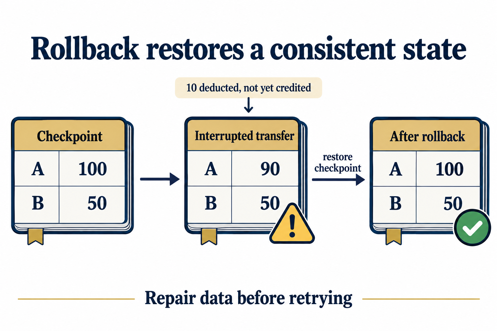
A'dan B'ye 10 birimlik transfer sl. 65:
| Aşama | A | B | A + B | Durum |
|---|---|---|---|---|
| Checkpoint | 100 | 50 | 150 | tutarlı |
| Transfer yarıda kesildi: 10 düşüldü, henüz eklenmedi | 90 | 50 | 140 | değişmez bozuk |
| Rollback sonrası | 100 | 50 | 150 | tutarlı, sonra kontrollü yeniden deneme |
Kurban yalnızca kilitlerini bırakarak öldürülseydi diğer işler 90/50'yi görürdü. Önce durumu geri yükle, sonra kilitleri bırak, sonra transferi baştan dene ek bilgi; sl. 64'teki "onarımı bırakmayla koordine et" kuralının uygulanışı.
7.3 Bir görevi tekrar tekrar cezalandırma sl. 66; Okuma §15#
- "En ucuz kurban" kuralı hep aynı katılımcıyı seçip onu aç bırakabilir. Yeniden deneme ya da geri alma geçmişini politikaya kat sl. 66.
- Her müdahaleden sonra durumu yeniden kur ve gereken beklemelerin artık çözülebildiğini doğrula sl. 66.
- Yeniden denerken yinelenen dış etkileri önle. Kaybolan bir yanıt, önceki işlemin etkisiz olduğu anlamına gelmez sl. 66. Örnek ek bilgi: transfer commit edildi ama yanıt kayboldu; körü körüne yeniden deneme parayı iki kez düşer. Çözüm: işlem kimliğiyle tekrar-güvenli (idempotent) deneme.
Kontrol soruları (Bölüm 7)
- K7.1 Tespit, sl. 61'deki {T1, T2, T3, T4} kümesini buldu. Hangi tek kurban döngüyü kırar? Kurbandan sonra ne yapman gerekir?
- K7.2 Bir transfer işini öldürüp mutex'lerini bırakmak neden kurtarma sayılmaz? Sl. 65'teki sayılarla açıkla.
8. Laboratuvar: lock-order.c, lockdep, banker.c sl. 67–74#
8.1 Kilit deneyi: üç mod sl. 67–69; Okuma §16#
lock-order.c'nin üç modu sl. 67:
- deadlock: iki worker farklı ilk kilitleri alır, buluşur (rendezvous), sonra diğer kilitte bloklanır. Dış bir timeout altında çalıştır.
- ordered: ikisi de önce L1, sonra L2. Bir worker ilk kilidi beklerken buluşma yoktur.
- try: ilk sahiplikleri senkronla, ikinci kilidi bir kez dene,
EBUSYraporla, sonra bırak. Kalıcı bloklama olmadan başarısız admission'ı gösterir.
Kodun önemli parçaları (uzmanın satır satır okuması):
rendezvous(phase): mutex ve koşul değişkeniyle yazılmış iki thread'lik bir bariyer. Amaç kötü serpiştirmeyisleepkullanmadan deterministik üretmek: buluşmadan çıkıldığında iki ilk kilit de tutuluyor sl. 69.- deadlock modunda kilitler yalnız fonksiyonun sonunda bırakılıyor ve oraya varmak için diğerinin kilidi gerekiyor. Programın içinde bırakma yolu yok sl. 70. Kaynaktaki yorum: "Unreachable under this protocol without external intervention".
- try modunda
rendezvous(1)iki deneme bitmeden kimsenin ilk kilidini bırakmamasını sağlar; bu yüzden iki deneme de mutlakaEBUSYalır sl. 69.EBUSYdışında bir şey dönerse program 3 ile çıkar. setvbuf(stdout, NULL, _IONBF, 0): stdout tamponsuz. Uzman bu satırı silip çıktıyı dosyaya yönlendirdi; öldürülen süreç 0 bayt bıraktı, yani kanıtın tamamı kayboldu (macOS'ta ölçüldü).
Derleme ve çalıştırma sl. 68:
cc -std=c11 -Wall -Wextra -O2 -pthread lock-order.c -o lock-order
timeout 3s ./lock-order deadlock; echo $?
./lock-order ordered
./lock-order try
İlk komut sınırlı olmalı, diğer ikisi bitmeli. Çalıştırmadan önce beklenen sahiplik ve istek durumunu çiz. Doğruluğu yalnız çıkış durumundan çıkarma sl. 68.
Beklenen tahmin sl. 69; Okuma §16:
| Mod | Tahmin | Saklanacak kanıt |
|---|---|---|
| deadlock | Her worker farklı bir ilk kilidi tutar ve diğerini bekler; kendiliğinden bitmez | iki "holds", iki "requests" mesajı, son tarihle sonlanma (124) |
| ordered | Ortak sıra ikisinin de bitmesine izin verir | completed, çıkış 0, kaynaktaki edinme kuralı |
| try | İlk kilitler tutulurken iki ikinci edinim de başarısız olur, sonra temizlik biter | iki EBUSY, çıkış 0 |
macOS'taki gerçek çıktı (uzman ölçtü; GNU timeout olmadığı için perl -e 'alarm 3; exec @ARGV' kullanıldı, bu yüzden çıkış 124 değil 142):
$ ./lock-order deadlock (3 s sonra SIGALRM)
worker 0 holds L1
worker 1 holds L2
worker 1 requests L1 while holding L2
worker 0 requests L2 while holding L1
exit=142
$ ./lock-order ordered
worker 0 owns L1 and L2
worker 1 owns L1 and L2
completed
$ ./lock-order try
worker 0 holds L1
worker 1 holds L2
worker 1: second lock EBUSY
worker 0: second lock EBUSY
completed
Mesaj sırası koşudan koşuya değişebilir (try modunda 300 koşunun 6'sında farklı çıktı). Karşılaştırmayı bağımlılık olgularıyla yap Okuma §16.
Yorum sl. 69:
- Kasıtlı buluşma, ikinci istekler gelmeden iki ilk kilidin de tutulmasını garanti eder; kötü durumu
sleep'e dayanmadan üretir. - ordered modu biter, çünkü bütün edinme kenarları L1'den L2'ye gider. Başarılı bir koşu bu argümanı örnekler, kanıt ispattır.
- try modu bir deneme yapar, sonsuz bir yeniden deneme döngüsü değildir. Keyfi yeniden denemeler için starvation'sızlığı göstermez.
Okumanın düşünme sorusu Okuma §16: deadlock modundan buluşmayı kaldırırsan ne doğru kalır? Ters sıra hâlâ deadlock'a izin verir, ama artık iki ilk kilidin aynı anda tutulması garanti değil; bazı koşular biter. Uzman ölçümü (macOS): buluşmasız ters sıra (kod/variants.c, norv modu) 2500 koşunun yalnız 3'ünde kilitlendi. Başarılı koşular kötü serpiştirmenin o koşularda olmadığını gösterir, protokolün güvenli olduğunu değil.
8.2 Saklanacak kanıt sl. 70; Okuma §16#
- İşletim sistemi ve derleyici sürümleri.
- Tam komutlar, derleme bayrakları dahil.
- Çıktı (dört mesajın tamamı).
- Çıkış durumu. GNU
timeoutsüresi dolunca normalde 124 döndürür. Bu bir son tarih sonucudur, deadlock dedektörü değildir sl. 70. - Sahiplik ve istek graph'ı: önce tahmin, sonra gözlemle karşılaştırma.
- İki açıklama: deadlock modunda neden içeride bir bırakma yolu yok; ordered program neden bir kilit sırası döngüsü kapatamaz sl. 70.
- YZ yardımı serbest: graph'ını ve varsayımlarını sorgulamak için kullan, sonra iddiaları kaynağa ve gözleme karşı kontrol et sl. 70.
Okumaya göre şunlar farklı kanıttır: mesaj basılmaması, derleme hatası, çok kısa bir son tarih Okuma §16.
8.3 Askıdaki deadlock'u gözlemlemek#
macOS'ta ölçüldü: sample <pid> iki worker'ın da lock-order.c:38'de, yani ikinci pthread_mutex_lock'ta, çekirdekte __psynch_mutexwait içinde uyuduğunu gösterdi; 881 örneğin 881'i aynı yerdeydi. lldb -p ile id=0 olan thread'in locks[1]'i (L2), id=1 olanın locks[0]'ı (L1) istediği okundu. ps iki worker'ı da S durumunda ve %0 CPU'da gösterdi. Sahiplik kenarları "holds" mesajlarından ve protokolden geldi. Birleşince W0 → L2 → W1 → L1 → W0 döngüsü çıkar: sl. 36'nın istediği "sahipleri, istekleri ve bırakma olaylarını yeniden kur" işi budur.
Linux karşılıkları ek bilgi; kaynakta yok, Linux'ta doğrulanmadı:
| Araç | Komut | Beklenen gözlem |
|---|---|---|
ps |
ps -L -o pid,lwp,stat,wchan:32,comm -p $P |
3 LWP, hepsi S; wchan bir futex bekleme fonksiyonu |
/proc |
cat /proc/$P/task/*/wchan ve /proc/$P/task/*/syscall |
futex sistem çağrısı; iki worker'da farklı bekleme adresi (biri &locks[0], diğeri &locks[1]) |
gdb |
gdb -p $P -batch -ex 'thread apply all bt' -ex 'p locks[0].__data.__owner' |
worker'lar 38. satırda; glibc'nin __owner alanı sahip LWP'yi verir (glibc'ye özgü iç alan) |
strace |
strace -f -e trace=futex ./lock-order deadlock |
iki thread'de FUTEX_WAIT_PRIVATE … <unfinished …> |
Ubuntu'da ptrace_scope varsayılanı yüzünden gdb -p için sudo gerekebilir ek bilgi. Çekişmesiz pthread_mutex_lock sistem çağrısı yapmaz, kullanıcı alanında atomik işlemle biter; strace yalnız çekişmeli edinimi gösterir ek bilgi.
8.4 Linux'ta lockdep sl. 71; Okuma §15#
Kaynağın söyledikleri sl. 71:
- Çekirdek lockdep, kilit sınıfları (lock classes) arasındaki bağımlılıkları izler ve kendi enstrümantasyonunun gördüğü tutarsız kilitleme kalıplarını raporlar.
- Gözlenen bir sıra bağımlılığı, belirli bir koşu donmamış olsa bile olası bir deadlock'u gösterebilir.
- Bir çekirdek hata ayıklama aracıdır; sıradan pthread mutex'lerinin her uygulama döngüsünü teşhis edeceği vaadi değildir. Kapsam ve yapılandırma önemli.
Mekanizma (ek bilgi; okumanın verdiği lockdep tasarım belgesi, Linux'ta doğrulanmadı):
- Kilit sınıfı: kurallar açısından aynı olan kilitlerin grubu (örneğin bütün inode'ların aynı kilidi). Binlerce örneği olsa da tek sınıftır.
- Bir görev A sınıfından bir kilidi tutarken B sınıfından birini alırsa graph'a A → B kenarı eklenir. Her yeni kenarda ters yönde bir yol var mı diye bakılır; varsa
possible circular locking dependency detectedraporu çıkar. - Neden donmadan uyarır: kenarlar sınıf düzeyinde ve zamandan bağımsız birikir. Sabah bir yolda A → B, akşam başka bir yolda B → A görülmüşse döngü potansiyeli ortaya çıkmıştır. Bu, sl. 31'deki rank ispatının, gözlenen kenarlar üzerinde çalışma anında yapılan sürümüdür.
- Sınırlar: yalnız çalıştırılan yolları görür; ilk rapordan sonra kendini kapatır; ek yükü yüksektir,
CONFIG_PROVE_LOCKINGile derlenmiş bir hata ayıklama çekirdeği ister; kullanıcı alanı pthread'lerini ve uzak bağımlılıkları görmez; starvation ve livelock kapsamında değildir.
Kullanıcı alanı benzerleri ek bilgi: ThreadSanitizer (-fsanitize=thread) ve Valgrind Helgrind, kilit sırası ters dönünce rapor verir. Uzman macOS'ta (Apple clang 21) TSan'dan lock-order-inversion raporu alamadı (data race raporu ise çalıştı); Linux'ta denenecek (Ek, deney 7). PTHREAD_MUTEX_ERRORCHECK yalnız aynı thread'in kendi kilidini yeniden istemesini EDEADLK ile yakalar; iki thread'lik döngüyü görmez (macOS'ta ölçüldü). Okuma bunu açıkça uyarır: error-checking mutex genel bir çok-thread'li döngü dedektörü sanılmamalı Okuma §8.
8.5 Safety pratiği: banker.c sl. 72; Okuma §16#
Hocanın görevi sl. 72:
banker.c'yi tam beş thread'lik anlık görüntü üzerinde çalıştır. Sırasını gösterilen vektörlerle eşleştir.- Bir Available bileşenini değiştir ya da bir istek yap; çalıştırmadan önce sonucu tahmin et.
- Toplam = Available + tahsisli instance'lar değişmezini koru.
- Safe, unsafe, unavailable ve above-maximum istekleri ayrı ayrı kontrol et.
- Reddedilen bir isteğin orijinal durumu değiştirmediğini doğrula.
Programın yapısı: safe() her geçişte thread'leri indeks sırasıyla tarar ve aynı geçişte uyan her işi bitirir. request() kaynaktaki sırayı izler: önce Need (1 = above maximum), sonra Available (2 = unavailable), sonra bir kopya üzerinde geçici tahsis ve safety (3 = unsafe). Reddedilen istekte asıl duruma hiç dokunulmaz; main bunu memcmp ile ve sonunda değişmezle doğrular.
macOS'taki gerçek çıktı (uzman ölçtü):
initial: safe sequence: T1 T3 T4 T0 T2
after T1 (1,0,2): safe sequence: T1 T3 T4 T0 T2
T4 (3,3,0): unavailable; unchanged
T0 (0,2,0): unsafe; unchanged
T1 (0,3,0): above maximum; unchanged
all checks passed
- Başlangıç sırası slayttakinden (T1, T3, T4, T2, T0) farklı. İkisi de geçerli tanık; program indis sırasıyla taradığı için T4'ten sonra T0'ı seçiyor sl. 56; Okuma §16.
- T1 sonrası sıra slaytla birebir aynı sl. 53.
- Tuzak (uzmanlar ölçtü):
request()çağrılarıassert(...)'in içinde. Program-DNDEBUGile derlenirse çağrılar hiç yapılmaz, ama çıktı birebir aynı kalır ve "all checks passed" basılır. Ders komutunda NDEBUG yok, sorun çıkmaz. Ders: "çıktı doğru göründü" ≠ "test çalıştı"; doğruluğu yalnız çıktıdan çıkarma sl. 68.
8.6 Review: modeli ve çareyi açıkla sl. 73#
Hocanın üç sorusu ve her cevabın taşıması gerekenler: varsayımlar, bir graph ya da vektör izi, yöntemin neyi garanti etmediği sl. 73.
- Kullanılmayan R4 instance'ları R1, R2, R3 üzerindeki deadlock ile neden bir arada olabilir? İkinci bir instance döngü testini neden zayıflatır? Tipler birbirinin yerine geçmez; deadlock tip tip (bileşen bileşen) değerlendirilir. Sl. 19'da kapalı küme {T1, T2, T3} yalnız R1, R2, R3 bekliyor; R4'ün boş instance'ları hiçbir eksik bileşeni karşılamaz. İkinci instance döngü dışındaki, bitebilecek bir thread'de olabilir; onun bırakması döngüyü çözer. Bu yüzden çok instance'ta döngü yalnız olasılık gösterir; sayılar ve indirgeme gerekir. Garanti etmediği: modellenmemiş beklemeleri (koşul değişkeni, uzak çağrı) görmez.
- Şu an deadlocked olmayan unsafe bir durum ver. Banker riskli tahsisi neden yine reddeder? Sl. 42: 10 birim, A 4 tutuyor (Max 6), B 5 tutuyor (Max 8), Available 1. Need'ler 2 ve 3, ikisi de 1'den büyük → unsafe; ama kimse bloklu değil, B maksimumunu istemeden bitebilir. Banker reddeder, çünkü kuralı beyan edilen maksimumlara karşı garantiyi korumak; işler kalan Need'lerinin tamamını isterse deadlock olur ve tahsis bir kez yapıldıktan sonra kaçınma bunu artık engelleyemez. Garanti etmediği: adalet; Max yanlış beyan edilirse garanti de biter.
- Circular wait'i kaldırmayı, unsafe bir isteği reddetmeyi ve deadlocked bir işlemi iptal etmeyi karşılaştır.
| Circular wait'i kaldır (kilit sırası) | Unsafe isteği reddet (Banker) | Deadlocked işlemi iptal et | |
|---|---|---|---|
| Sınıf | Önleme | Kaçınma | Tespit + kurtarma |
| Gereken bilgi | Kilitlerin global rank'ı; thread başına sayı gerekmez | Her thread'in Max'ı, Allocation, Available | Şu anki Request ve Allocation, tutarlı anlık görüntü, geri alınabilir bir sınır |
| Karar anı | Tasarım ve kod yazımı | Her istekte, tahsisten önce | Deadlock olduktan sonra |
| Maliyet | Esneklik kaybı, her yolun denetimi | Her istekte O(m·n²), kötümser retler, beyan yükü | İzleme yükü, kurbanın kaybolan işi, rollback altyapısı |
| Garanti etmediği | Adalet; modellenmemiş bağımlılıklar | Adalet; yanlış Max'a karşı koruma | Tek kurbanın her döngüyü kırması; dış etkilerin geri alınması |
Kaynak: sl. 27; sl. 31; sl. 51; sl. 57–66; Okuma §17. Okumanın son karşılaştırma alıştırması (bağlantı havuzu) aynı üçlüyü sorar ve şunu ekler: hiçbiri adaleti kendiliğinden çözmez; havuz dışındaki uygulama kilitleri analizi geçersiz kılabilir Okuma §17.
Sonraki ders sl. 74: bellek yönetimi ve adres çevirisi. Kaynak muhasebesi devam ediyor, ama merkezdeki nesne sürecin adres alanı oluyor.
Kontrol soruları (Bölüm 8)
- K8.1
timeout 3s ./lock-order deadlock124 döndürdü. Bunu bir deadlock kanıtına çevirmek için başka hangi kanıtlar gerekir? - K8.2
banker.c'de Available'ı (3,3,2) yerine (3,3,1) yaparsan başlangıç durumu safe kalır mı? Önce tahmin et, sonra izini çıkar.
Ek: Ubuntu'da denenecek küçük deneyler (önce tahmin et, sonra çalıştır)#
Kodlar macOS'ta derlendi ve çalıştırıldı. Linux'a özgü sonuçlar "beklenen" diye yazıldı ve doğrulanmadı. Ders kodları materyaller/Ders-04_Deadlocks/kod/ altında; uzmanların yazdığı ek programlar notlar/ders-04/kod/ altında (variants.c, backoff.c, banker-x.c + banker-core.c, tsan-inversion.c, runlimit.c). Her deneyden sonra pgrep -x lock-order ile askıda süreç kalmadığını kontrol et.
- Ortam kanıtı sl. 70:
lsb_release -a; uname -r; cc --version | head -1; ldd --version | head -1; timeout --version | head -1. - Hocanın deneyi sl. 68: üç mod. Beklenen: deadlock modunda dört mesaj ve 124; ordered ve try modlarında
completedve 0. Okumaya göre bu Ubuntu ölçümü henüz yapılmadı Okuma §16. - Sinyal farkı:
timeout -s KILL 3s ./lock-order deadlock; echo $?. Beklenen 137 (128 + 9), 124 değil ek bilgi. Çıkış kodunun bir son tarih sonucu olduğunu gösterir. - Askıdaki thread'ler:
./lock-order deadlock & P=$!; sleep 1; ps -L -o pid,lwp,stat,wchan:32,comm -p $P; cat /proc/$P/task/*/wchan; kill $P. Beklenen: 3 LWP, hepsiS, futex beklemesi. - Sahipliği okumak:
-g -O0ile derle,sudo gdb -p $P -batch -ex 'thread apply all bt' -ex 'p locks[0].__data.__owner' -ex 'p locks[1].__data.__owner'. Sahip LWP'leri 4. deneyle eşleştir ve wait-for döngüsünü kur sl. 36. - Error-checking mutex:
./variants self-errcheck(aynı thread kendi kilidini tekrar ister:EDEADLK, glibc'de 35 beklenir),timeout 2s ./variants errcheck; echo $?(iki thread'lik döngü: yine 124) Okuma §8. - TSan:
cc -O1 -g -fsanitize=thread -pthread tsan-inversion.c -o ti && ./ti. Program asla kilitlenmez ama sırayı tersine çevirir. Beklenen:lock-order-inversion (potential deadlock)uyarısı. macOS'taki boş sonuçla karşılaştır. - Başarı kanıt değildir: buluşmasız ters sırayı (
./variants norv) 2000 kez 0,3 saniyelik sınırla çalıştır, kaç kez kilitlendiğini say (macOS: 2500'de 3). - Livelock:
./backoff lockstep 10000(beklenen 0 başarı) ve./backoff lockstep-random 10000 0 1(başarı ≈ çarpışma / 2) sl. 16. - Banker sl. 72:
./banker; sonra orijinal görüntüden tek istek deneyen./banker-x 0 0 2 0(beklenen granted, 0) ve./banker-x 4 3 3 0(beklenen unsafe, 3). Sonra-DNDEBUGile derleyip çıktının değişmediğini gör.